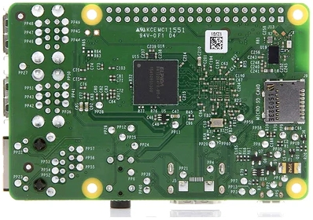
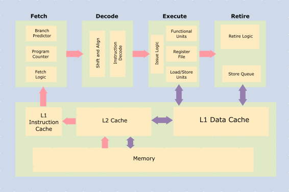
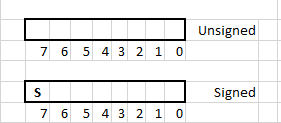

Preface
This book is an introduction to the ARM Cortex-A AArch64 architecture and programming in the C language. Readers will learn the architecture by writing programs in ARM assembly and C programming languages. The book covers a subset of the instruction set architecture (ISA) and provides several exercises for readers to practise and develop familiarity with the ISA. Also included are important portions of the ARM architecture including interrupts and exceptions, exception levels, virtual memory etc. In addition to assembly programming the book also serves as an introduction to the venerable C programming language. The book strives to explain the relationship between code written in C and its equivalent in ARM assembly. The objective is to give readers a glimpse into what high-level code translates to in assembly language. Readers will understand things like what happens on a function call, how values are passed into functions and returned from them, and what is the overhead of function calls. They will understand how control flow really works, what pointers are under the hood, and the real difference between passing by value or reference.
The book would be useful to anyone looking to pursue a career in embedded systems, compilers, OS development, computer security, or CPU verification. To make it accessible to a wider audience, it has been written so that readers require no prior experience in programming. Therefore, experienced programmers may find it a bit tedious and verbose. If you are one such reader, we encourage you to skim through the book dipping into areas that are new or interesting and skipping ones you already know.
Note: The contents of this book and associated code hosted in GitHub are provided for educational purposes only. Specifically, this material is not official documentation of the ARM architecture or the C programming language. All opinions expressed are solely that of the authors.
Introduction
This is Part 1 of a series of online books which will give readers an introduction to the ARM AArch64 architecture using ARM assembly language and the C programming language. It takes a hands-on approach to teaching programming and provides explanations along with exercises. Readers will benefit if they follow along by doing the exercises themselves. Ideally, after the first exercise, readers should try to write the programs on their own. We will initially learn to write programs in assembly language and then in the C programming language. We strongly encourage readers to try solving each exercise in this book by themselves. Refer to the provided solution only when stuck and/or to learn alternative solutions to exercises.
Who is this book for?
This book will be useful to those interested in learning how processors work at the lowest level. Specifically, it can be useful for readers interested in working in embedded systems, OS development, compiler development, computer security, and CPU verification.
The book assumes readers have no prior knowledge of computer architecture or experience with any programming language. The book is self-contained and it is intended that everyone with high-school level mathematics background will be able to follow along.
What will you learn?
This material teaches how microprocessors work under the hood. Readers will learn how actual computation is performed using the basic instructions that a processor can execute. They will learn how system software works with the underlying hardware.
Part 1 (i.e. this book) covers:
- Arm AArch64 architecture for application programmers
- Writing code in ARM assembly language
- An introduction to programming in C
- How C code relates to assembly
All the code written in this book runs "bare-metal". This means there is no underlying OS or any other software to support the code you will learn to write. Everything that is executed by the processor will be written by the reader (with some support from template code provided in the book).
Why learn assembly programming and CPU architecture?
High-level languages (HLLs) abstract a lot of detail from the programmer. This is useful because abstraction hides underlying complexity and therefore makes programming easier and faster. Today there are many HLLs that are popular - Java, Swift, Python, C#, Kotlin etc. Developing applications in HLLs enables fast development time, abstraction, and portability at the cost of some overheads. For many software projects this is a very reasonable tradeoff. Especially since modern computer systems are much faster than their counterparts from a decade ago. HLL applications are efficiently translated by compilers into assembly language. Programmers developing applications do not need a detailed understanding of the CPU architecture and the language directly understood by the CPU (assembly).
However, there are some areas in software development and computer design that require programmers to have a good knowledge of CPU architecture, assembly language and some HLL (usually C or C++). For example:
- Embedded systems
- Compiler development
- Operating System development
- Pre- and post-silicon verification of CPUs and computer systems
- Low level code optimization
- Cyber Security - analyzing and developing exploits, reverse-engineering etc.
Assembly language is specific to the architecture used by the system (e.g. ARM, x86, PowerPC etc.) and is not portable across processor types. It is the most direct way for programmers to interact with the processor and its peripherals. So there are no layers of abstraction or obfuscation between the programmer and the hardware. By learning assembly programming one can understand how a processor works under the hood. How computations are performed and how resources like memory are virtualized so that it can be shared among multiple applications. Coupling that knowledge with a programming language like C gives the programmer the skills to work in the domains listed above.
The ARM architecture is ubiquitous and used in a range of devices from wrist watches to super computers. This book teaches readers the fundamentals of the AArch64 architecture and assembly language. It also presents an introduction to the C programming language and explains how code written in C relates to assembly.
Hardware and Software Requirements
To follow the exercises in this book you need a PC or a Mac computer with 4GB of memory or more. In addition, the computer will need to have 5GB of free disk space. The supported operating systems are listed below. The computer should be running the specified version or later.
macOS 10.15 (Catalina), Windows 10, and Ubuntu 20.04 LTS
Installation of Required Tools
You will need the following software tools for following along this book
- GCC for ARM: A compiler to compile your programs into binary.
- QEMU: This is a software emulator that we will use to emulate the Raspberry Pi
- Make tool for Windows 10
- Git: A version control software. You will use this to get a copy of the code in this book from our Git repository.
Windows 10
GCC compiler
The compiler is available as a free download from here. The specific version you need for Windows 10 is under the "Windows mingw" section and the "aarch64-none-elf" version. Download the .tar.xz file.
This is a compressed archived file containing all the compiler, assembler and disassembler tools needed for this book. To extract these files you will need a program like 7-zip. Once you install 7-Zip you can open the tar.xz file using that program.
Opening the archive file will give you a directory. Move that directory to your home directory (in windows this will be C:\Users<Your_User_Name>)
QEMU
Preferably running 64-bit Windows 10
- Download QEMU and click on 64-bit version (select the 32-bit version if you are using 32-bit Win 10)
- Download the latest released installer executable
- Run installer and follow instructions to install
Make
- Download Make for Windows from here.
- Down load the installer executable by selecting Complete package, except sources option.
- Run installer and follow instructions to install
Git
Git is a source control management system. Download the installer from here and follow the instructions in the installer.
The installation includes an application named Git bash. Git Bash is a Linux-based command line environment. It allows users to type various Git commands that make source code management easier.
After the installation of Git is complete, open the Git Bash application using the Start menu. This will open a terminal window with a command prompt and it current directory by default will be your home directory.
Create a subdirectory named low_level_prog and navigate into it by running following commands in the Git bash terminal window.
mkdir low_level_prog
cd low_level_prog
Now, type the following to checkout code from the repository:
git clone https://github.com/hrishim/llvl_prog1_code.git
Setting up the environment
- Navigate into the code checout:
cd llvl_prog1_code
- Open dotbashrc file using vim editor (included as part of Git bash installation):
vim dotbashrc
NOTE: : If you prefer to use a different editor like notepad, you can replace vim with the editor name of your preference. For example: notepad dotbashrc
- Fill up the installation paths of Qemu, GCC and Make in space provided within the dotbashrc file:
# Please fill the actual installation path of Qemu below:
# For example:
# export LOCAL_QEMU_PATH="/c/Program Files/qemu"
export LOCAL_QEMU_PATH=""
# Please fill the actual installation path of ARM GCC below:
# For example:
# export LOCAL_GCC_PATH="$HOME/gcc-arm-10.2-2020.11-mingw-w64-i686-aarch64-none-elf"
export LOCAL_GCC_PATH=""
# Please fill the actual installation path of make below:
# For example:
# export LOCAL_MAKE_PATH="$HOME/make-3.81-bin"
export LOCAL_MAKE_PATH=""
NOTE: While specifying any path in this file, following minor modifications to Windows paths must be made:
- Replace backslashes(\) in Windows paths with forward slashes(/).
- Remove the first colon after the drive letter, and add a slash at the beginning.
- $HOME can be used to refer to the home directory
- For example: (1) Windows path: "C:\Program Files/qemu" would become "/c/Program Files/qemu". (2) "C:\Users<Your_User_Name>\make" would become "$HOME/make"
- Exit the editor and source the dotbashrc file to setup the environment
source dotbashrc
- Test if it is working by typing the following command in the terminal window:
qemu-system-aarch64 --version
You should see an output like below. The version you see may be different and that is OK.
QEMU emulator version 6.0.0 (v6.0.0-11869-g800a25ea45-dirty)
Copyright (c) 2003-2021 Fabrice Bellard and the QEMU Project developers
``
**Additional help (external link):** [Installing QEMU on Windows](https://www.youtube.com/watch?v=SHMUMeEzSS0) (see the path setting)
Computer System Overview
This section gives an overview of the main components of a computer system. It is not a comprehensive explanation of everything on a computer board. The intention is to provide readers with sufficient context to understand the rest of this book.
The components in a computer system are mounted on a board and connected to each other by wires embedded in the board. These components include a system on chip (SoC), peripherals and connectors. The SoC is the component that performs computation. Everything else on the board is to enable the SoC to perform its work and for the external world (including human users) to interact with the SoC. This is a general description of a computer system. Every individual system will have some differences. The peripherals on the board may be different. Also, some systems may have high-speed interconnects such as PCI that allows extension cards to be connected to the system.
In part one of this book we will be working with a software model of the popular single board computer -
Raspberry Pi. The image below shows a Raspberry Pi 3 B+ model single-board computer. The big silver colored square chip with text on it is the SoC.

The SoC used in this board is designed by Broadcom. There are multiple Arm CPUs inside the SoC to perform computations. In addition to the CPUs there are other components such as a graphics chip, memory etc in the SoC.
The CPUs (also called cores) are based on the Arm AArch64 architecture specification. We will be learning AArch64 assembly language that can be used to write programs to direct what the CPU should do - i.e. the specific steps they need to perform for things like computing the fibonacci series etc.
Besides the main SoC there are other components on the chip. The black square with the text "LAN 7515" is another micro-chip which is a USB hub and a controller for Ethernet. In addition two these chips there are USB ports, a micro USB port, an ethernet port and GPIO pins on the board.
Here is a picture of the back of the board. The black square that is aligned with the SoC on the top of the board is the DRAM (memory) that the processor uses to store data.

The main item of interest for us are the ARM cores inside the SoC. Almost all of the material in this book will be about how to write code that can be executed by these cores. The SD-card slot where a storage card can be affixed is the silver recrtangle on the right side.
The SoC
The picture below shows a block diagram of the components inside a typical SoC.

In the top left of the diagram is the CPU with multiple cores. The CPU is the main computation engine inside the SoC. Many modern CPUs are multi-processors, meaning they have more than one processing core in the CPU. Each CPU has a L1 cache. Caches are are fast SRAM memory of limited capacity that the CPU can access quickly. Data that is frequently used by the CPU is stored in caches so that it can be accessed faster than from DRAM.
The cores share some of the components on the CPU and SoC. Usually they will share the level-2 cache, level-3 cache (if any), interconnect, memory, and I/O peripherals. The SoCs in Raspberry Pi 3 boards have quad-core ARM Cortex A53 CPUs. Each core has a 32KB L1 data cache and a 48KB L1 instruction cache. The cores share a 1MB L2 cache.
All cores in the CPU share a main memory unit (MMU). This unit is used to translate virtual addresses used by the CPUs to physical addresses. Virtual and physical addresses will be covered in part two of this book. The CPU connects to memory and peripherals - such as ethernet, DMA, USB, timer, UART, SPI, I2C, I2S, PWM etc. - via the interconnect which is labeled as AMBA/AXI in the diagram.
The ARM Cores
The CPU cores are the components that perform computation. The cores are programmable, meaning that they understand a set of instructions and the programmer can write programs by issuing instructions from this set to the Core. These CPUs conform to the ARM Cortex-A architecture. The architecture defines the instructions and their encoding, resources available to the Cores, and some other features like how memory is addressed etc.
The block diagram below shows a high-level block diagram of the inside of an typical CPU core. The CPU consists of an execution pipeline comprising of
- Program counter: Tracks the current instruction being executed
- logic gates to fetch instructions, decode them, execute and write results
- caches and registers to store results
- memory structures to store in-flight instructions, data, meta-data (for branch prediction, pre-fetching etc.)

How do the cores execute the programmers commands?
Well, the programmer writes the program in assembly language or a higher level language like C. The program is compiled into a binary file using a compiler. The binary file is an encoding of the instructions (as specified in the architecture manual). This file is loaded into memory and the program counter (PC) of the CPU core is set to the memory address of the first instruction in memory. Multi-processor SoCs have multiple programmable CPU cores. Each of them have their own program counter. They can execute code independent of each other.
The logic blocks of the CPU then read the instruction from memory (instruction fetch) location pointed to by the PC, decode it, read the required data for the operation, perform the operation (execute) and write results back to registers or to memory (store instructions).
Note that the fetch stage of the processor works automatically to load instructions from memory into the processor pipeline. No explicit program instruction is needed for this purpose. However, to move data to/from memory from/to registers the programmer has to use load and store instructions. Instructions that perform computations read their input values from registers in the register file (i.e. collection of registers) and write the output back to the register file.
The register file is a small memory structure, comprising of multiple registers, that is close to the processor pipeline. It is used to store values required for instructions executing in the processor. Since it is closest to the processing core, it can be accessed quickly. Typically registers in the register file can be read/written in one CPU cycle. However, due to area and latency constraints the number of registers available is usually small. Therefore, for most programs the entire data needed to be read/written by the program cannot be stored in the register file. ARM is a RISC architecture. So compute instructions cannot directly use data located in memory. Nor can they write results directly back to memory. In this architecture, programmers have to explicitly load data from memory into a register and then use it to compute values. There are separate instructions - distinct from computational ones - to load and store data from memory.
Bits and Bytes
As most readers probably know, computers store and process data as bits. A single bit - binary digit - is the minimum unit of information stored in a computer. A bit can can hold one of two values - 0 or 1. A group of 8 bits, called byte, is usually the smallest addressable unit of memory. In a modern computer system (most of them anyway) memory in a computer consists of a millions of bits that are grouped into bytes. Every byte has a unique address and can be individually loaded in to registers using specific instructions. A byte is 8-bits. A word is 4 bytes. A double-word is 8 bytes and a half-word is 2 bytes. These are the data sizes one will commonly encounter in assembly programming.
In Part 1 you will learn how to write programs that run on the Arm Cores. In the process we will learn the Arm A-class processor architecture, Arm assembly, and some C programming.
ARM Registers and Processor Execution State
CPU Cores, also called processors, are programmable hardware that can perform computation. Programmable meaning they can be given a set of instructions - encoded as bits - and they will perform the computation as directed in the instructions.
What instructions can a programmer give the processor? What resources does the processor have to execute those instructions? These are defined in the processor's architecture. The architecture of ARM processors are specified in the ARM Architecture Reference Manual (see References). The architecture also specifies the instructions that the processor is capable of understanding.
Programmers use these instructions to write programs in assembly language. In subsequent chapters we will learn how to use ARM assembly language to program the processor. This section provides an overview of the resources that an ARM processor has at its disposal to aid in performing computation.
The two resources available to programmers are registers and PSTATE. Registers allow programmers to store a limited amount of data. Instructions can perform operations on register values. The output values generated by instructions are also stored in registers.
Data can also be stored in memory. Usually (almost always), the amount of data that can be stored in memory is much larger than what can be stored in registers. However, in the ARM architecture computational instructions cannot directly operate on data in memory. They can only operate on register values. Special instructions, called Load/Store instructions, are used to transfer data between memory and registers.
ARM Registers
The architecture provides programmers with 31 general purpose registers. These registers store inputs for computation and the output. They may also be used to store intermediate results of computations.
For example, if a program is used to compute the function:
L = (A + B) * K
Registers can be used to hold the values of A, B, and K. Another register can be used to hold the value of the result (L). The result of the addition (A + B) is a temporary value in this context. It is needed to compute the final answer but not necessary after that. This temporary value can also be stored in a register.
The 31 general purpose registers are 64-bits wide. But they can be used either as 64-bit or as 32-bit registers. The registers are named X0-X30 when they are referred to in 64-bit form. They are named W0-W30 when referred to in 32-bit form. From a programmer's perspective, general purpose registers are locations that can be used to store data. The programmer may write to, read from, and re-write registers as required to accomplish their end goal.
The X30 register has a special function. It is used as a link register for procedure calls. The specifics of this function are explained in later chapters.

The general purpose registers can be used by Integer and Logic operation instructions. Another set of 32 registers are available for use with floating-point and SIMD instructions. We will not be using those instructions in this book, the interested reader can consult the ARM architecture reference manual for details.
There are two additional registers with specific functions - stack pointer (SP) and program counter (PC). They cannot be used for general purpose computation. The SP register is a 64-bit register that points to the current "top of stack". The chapter on Functions will explain this use of this register. The PC register is a 64-bit register that holds the address of the current instruction being executed. This register cannot be written to directly. It is updated by the processor when a branch instruction is executed and on exception entry/return. We will learn more about control flow and exceptions later in this book.
Here is the pseudo code for the operation L = (A + B) * K:
1. Load K into X0
2. Load A into X1
3. Load B into X2
4. X3 = X1 + X2
5. X0 = X3 * X0 #result is left in X0
ARM Process State (PSTATE)
In addition to registers the architecture also provides some state that records information related to computation and exceptions. The process state (PSTATE) comprises of:
- Condition flags
- Exception masking bits
There are four condition flags:
| Flag | Desc |
|---|---|
| N | Negative flag |
| Z | Zero flag |
| C | Carry flag |
| V | Overflow flag |
These flags are 1-bit each, so they can have only values of 0 (clear) or 1 (set). Certain instructions in the ISA set these flags if the computation results in specific conditions.
The N flag represents the sign of the result of the previous operation. If say the operation was an addition (or subtraction, multiplication, division etc.) and the result was a negative number then this flag is set. If the result was a positive number then this flag is cleared.
The Z flag, when set, indicates that the output of the previous instruction was zero.
The C flag is called the carry flag. This flag is set if an arithmetic operation results in an arithmetic carry or borrow. The V flag indicates that the previous operation resulted in an arithmetic overflow. The explanation for when these flags are set/cleared requires an understanding of binary arithmetic and therefore will be provided in the corresponding section.
The PSTATE includes four exception masking bits.
| Exception Masking | Description |
|---|---|
| D | Debug exception mask |
| A | SError interrupt mask |
| I | IRQ interrupt mask |
| F | FIQ interrupt mask |
We will discuss exceptions and masking exceptions in part 2 of this book (not yet available). For now, just know that they are part of the PSTATE.
What we learned this chapter
- ARM general purpose registers
- ARM PSTATE
Binary Representation of Integers
This section we will learn about number representation using the binary system. Representation only governs how numbers are represented for writing, storing in memory etc. It makes no difference to the result of arithmetic operations. Meaning that arithmetic operations like addition, subtraction, multiplication, and division will have the same result regardless of whether the representation is in decimal, binary, hexadecimal, octal etc.
We are used to counting using the decimal number system. This system has ten symbols (decimal numerals) to represent numbers, namely - 0 1 2 3 4 5 6 7 8 9. Of course, these symbols can represent values greater than ten. For example, after counting from 0 till 9 we run out of symbols for ten. To represent ten and higher numbers more than one of those symbols is used - 10, 11, 12...10521... etc. A special symbol is pre-fixed to numbers to represent negative numbers (-1, -2, -3... etc.).
OK, so all of this number representation is elementary school material. What is the point of all this? The main point is that numbers are represented with symbols. Modern computers use binary representation for storing and operating on numbers. The decimal number format uses 10 symbols (11 actually if you count the minus sign for negative numbers) the binary number format uses just two symbols.
Therefore, when working with computers at the lowest level, it is important to know how numbers are represented and how arithmetic operations are performed in binary .
Note:
Are there computers that use representations other than binary? There were a few that used ternary logic (i.e. base: 3). However, all computers that one is likely to encounter today use binary representation. Ternary and other base forms are outside the scope of this book.
Representation only governs how numbers are represented for writing, storing in memory etc. It makes no difference to the result of arithmetic operations. Meaning that arithmetic operations like addition, subtraction, multiplication, and division will have the same result regardless of whether the representation is in decimal, binary, hexadecimal, octal etc.
Binary Representation
The binary number system uses two numerals - 0 and 1. So, just like in the decimal system, more than one of those symbols are needed to represent 2 and greater. The table below shows decimal numbers and their equivalent binary:
| Decimal | Binary |
|---|---|
| 0 | 0b0 |
| 1 | 0b1 |
| 2 | 0b10 |
| 3 | 0b11 |
| 4 | 0b100 |
| 5 | 0b101 |
| 6 | 0b110 |
| 7 | 0b111 |
| 8 | 0b1000 |
| 9 | 0b1001 |
| 10 | 0b1010 |
| 100 | 0b1100100 |
| 1000 | 0b1111101000 |
When referring to binary numbers in code it is common to prefix it with special characters to indicate the number is in binary representation. The convention is to use the prefix 0b for binary numbers and 0x for hexadecimal numbers. Decimal numbers have no prefix.
In the decimal system, all numbers that are powers of 10, are represented with the symbol 1 followed by zero or more 0s. Examples include 1, 10, 100 etc. The position of numerals representing a number is called "decimal place". So a number like say 25 has one decimal numeral in the 10's place and another in the 1's place.
25 = 2 * 10^1 + 5 * 10^0
542 = 5 * 10^2 + 4 * 10^1 + 2 * 10^0
Here ^ means raised to the power.
Recall that any number raised to power 0 is 1. So 10^0 is 1.
The binary number system uses base 2. This means the position of every numeral is a power of 2. Also, in binary representation, numbers that are a power of two are represented with the numeral 1 followed by 0s. This is similar to power of 10 numbers in the decimal system!!
For example, the number 2 in binary is 0b10. Why is that? Because 0b10 is
1 * 2^1 + 0 * 2^0 = 2
Here ^ means raised to the power.
Decimal numbers that are powers of 10 are represented with the numeral 1 followed by the numeral 0. The number of 0s depends on the power of 10. In binary the same applies to numbers that are powers of 2. In the table above, the binary equivalent of 2, 4 and 8 all have only one numeral set to 1 and it is followed by 0s.
Converting From Binary to Decimal and Vice Versa
It is pretty straight forward to convert a number from binary to decimal. All it requires is to multiply the binary numeral with the appropriate power of 2.
For example, the binary number 0b10 can be converted to decimal the following way:
Binary number: 0b10
1 * 2^1 + 0 * 2^0 = 2
Decimal: 2
Another example,
Binary number: 0b1001
1 * 2^3 + 0 * 2^2 + 0 * 2^1 + 1 * 2^0 = 8 + 0 + 0 + 1 = 9
Decimal: 9
Converting from decimal to binary is a just a touch more difficult because it requires division. It is done by repeatedly dividing the number and recording the remainder. The division is continued until what remains is 0.
Here is an example of how to convert the decimal number 8 to binary. We divide 8 by 2 successively until the quotient is 0. The quotient and remainder of each step of the division is shown below.
Decimal number: 8
2 | 8
----
2 | 4 - 0
----
2 | 2 - 0
----
2 | 1 - 0
----
0 - 1
The binary representation is the remainder read backwards. So in this instance it will be 0b1000 (the leading 0 is dropped).
Practice converting number formats
Convert the following binary numbers to decimal: 0b100, 0b1011, 0b10000, 0b11001
Click here to see answers.
| Binary | Decimal |
|---|---|
| 0b100 | 4 |
| 0b1011 | 11 |
| 0b10000 | 16 |
| 0b11001 | 25 |
Convert the following decimal numbers to binary: 52, 29, 17, 32
Click here to see answers.
| Decimal | Binary |
|---|---|
| 52 | 0b110100 |
| 29 | 0b11101 |
| 17 | 0b10001 |
| 32 | 0b100000 |
Binary representation in computers
Larger numbers may need more numerals for representation. For example, 0b100000000 (256) requires nine binary digits while 0b1 (1) requires just one binary digit. In practice it is very difficult to implement logic circuitry (adders, multipliers etc.) to account for the variation in binary digits. Therefore, computers use fixed-width integers. This means that numbers are represented with a fixed number of digits. The most common widths are 8-bit (byte), 16-bit (half-word), 32-bit (word), 64-bit (double word).
Fixed-width representations can be used to represent numbers from 0 up to a maximum value. That maximum value is determined using the formula 2N - 1, where N is the width. The largest integer that can be represented in 8-bit fixed-width is
2^8 - 1 = 256 - 1 = 255
8-bit binary number can represent numbers in the range 0-255
This is a small number range and computers will be of limited use if all they can represent are numbers from 0 to 255. However, the word and double-word representations can be used to represent very large numbers. The maximum value that can be represented with a double-word is
2^64 - 1 = 18,446,744,073,709,551,616 - 1 = 18,446,744,073,709,551,615
That is a 20-digit decimal number!!
Note: There are software tricks that can be used to represent numbers with more than 64-bits. We will not encounter such large numbers in any of the exercises in this book.
The minimum number of bits required to a number can be found by computing log2(number) and rounding up to the closest integer. If you do not know the logarithm (log) function that is fine, we will not need to use it extensively in this book. Another way is to find the smallest power of 2 that is greater than the given number - the exponent is the minimum number of bits required to represent that number. For example, the number 9 can be represented using 4 bits. Because 24 = 16 is the smallest power of 2 that is also greater than 9. Note that 23 is 8 and is smaller than 9. What about the number 8? Well 23 is equal to 8 and so we cannot represent it with 3 bits because we need the smallest power of 2 that is greater than 8. We need 4 bits to represent the number 8.
Now that we know computers use fixed-width representations, the natural question is - what happens when a computation results in a number larger (or smaller) than the representable range? When using 8-bit numbers, what result is generated when the computer is told to add 1 and 255?
The computation results in a overflow or carry. We will learn more about these concepts in this chapter and revisit them in the chapter on conditional flags.
Binary Arithmetic - Addition
Binary addition and subtraction are done just like in decimal arithmetic. The basic rules remain the same.
0 + 0 = 0
0 + 1 = 1
1 + 0 = 1
1 + 1 = 10
Here is an example of adding 0b101 (5) and 0b11 (3)
11 01 1
0 1 1
---------------
1 0 0 0
Just like in decimal addition we add digits in the corresponding digits of the number from right to left. If the sum results in a carry (i.e. 1 + 1) then the carry is added to the next number. If the numbers are of dis-similar lengths then 0s are prefixed as required.
When binary arithmetic is performed in digital circuits there is a fixed-width for representing the numbers. So if the sum of the two numbers is larger than what can be represented, some special provision has to be made to indicate to the programmer that the result is incorrect.
For example, when adding the following 4-bit numbers 0b1111 (15) and 0b0001 (1)
11 11 11 1
0 0 0 1
---------------
1 |0 0 0 0
Since there are only 4-bits to represent the numbers the result can only hold 0b0000. The fifth and most significant bit is lost. Clearly some indication has to be provided to the programmer that the result is incomplete without the most significant bit. Computers usually do this using a special "flag" register called the Carry flag. The Carry flag is 1-bit wide and holds the result of the carry over of an addition. If the addition did not result in a carry then this flag is set to 0. If the addition results in a carry then the flag is set to 1. In the ARM architecture the carry flag (C) is part of the PSTATE.
Representing negative numbers
There are multiple methods to represent negative numbers. One common method is to use the highest digit in a fixed-width number to represent the sign. The diagram below shows unsigned and signed 8-bit numbers. Signed and unsigned 8-bit numbers use (surprise!!) 8-bits to represent the number. In the diagram below those 8 bits are represented as empty boxes. Each digit of the 8-bit number is individually referred to by it's index. The index starts from 0 and goes till 7. Index 0 is also called the least significant bit (LSB) and index 7 is called the most significant bit.

Signed numbers use the most significant bit to represent the sign and the remaining bits to represent the magnitude of the number. For 8-bit signed number the bit at index 7 is used as the sign bit and bits 0-6 are used to represent the magnitude. For a N-bit number the bit at the N-1th index is the sign bit and the remaining bits are used to represent the magnitude.
For a 4-bit number the table below shows the binary and decimal equivalent when the number is interpreted as signed.
| Sign & Magnitude Representation | Decimal |
|---|---|
| 0b0000 | 0 |
| 0b0001 | 1 |
| 0b0010 | 2 |
| 0b0011 | 3 |
| 0b0100 | 4 |
| 0b0101 | 5 |
| 0b0110 | 6 |
| 0b0111 | 7 |
| 0b1000 | -0 |
| 0b1001 | -1 |
| 0b1010 | -2 |
| 0b1011 | -3 |
| 0b1100 | -4 |
| 0b1101 | -5 |
| 0b1110 | -6 |
| 0b1111 | -7 |
While the above method can represent negative numbers it is not very efficient. First, notice that there are two representations for 0, namely - 0b0000 and 0b1000. Also, it would be difficult to implement logic circuits to do arithmetic with the above representation. Therefore, other representations are used. Two commonly used representations are 2's complement method and the 1's complement method. The ARM architecture and the following chapters use only 2's complement to represent signed integers. We will go over 2's complement representation below.
Two's complement representation
In two's complement the most significant bit (MSB) of the number represents the sign of the number. The remaining bits represent the magnitude but are not interpreted literally. An N-bit two's complement representation can represent numbers in the range -2(N-1) to (2(N-1) - 1)
The table below shows 2's complement representation for a 4-bit number. Positive numbers in 2's complement start with 0 and the remaining bits represent the magnitude of the number. However, note that the maximum positive number that can be represented using in a 4-bit 2's complement representation is 0b0111 (i.e. 7). This corresponds to 23 - 1 = 7.
| Two's complement | Decimal |
|---|---|
| 0b0000 | 0 |
| 0b0001 | 1 |
| 0b0010 | 2 |
| 0b0011 | 3 |
| 0b0100 | 4 |
| 0b0101 | 5 |
| 0b0110 | 6 |
| 0b0111 | 7 |
| 0b1111 | -1 |
| 0b1110 | -2 |
| 0b1101 | -3 |
| 0b1100 | -4 |
| 0b1011 | -5 |
| 0b1010 | -6 |
| 0b1001 | -7 |
| 0b1000 | -8 |
To convert a negative decimal number to 2's complement we use the following steps.
- Write the number in binary, ignoring the sign
- Invert the 0s and 1s in the number
- Add 1 to the result of step 2.
Note that step 2 is the same as performing the NOT logic operation on the number. We will learn that and other logic operations in a later section.
For example, let us convert -2 to two's complement binary representation.
- Number 2 in binary is 0b0010 (we will use a 4-bit binary representation)
- NOT (0b0010) = 0b1101
- Add 1 to the result: 0b1101 + 0b1 = 0b1110
How do we convert a 2's complement number 0b1110 to decimal? The process is near identical.
- Note the sign bit
- Invert the 0's and 1's in the number
- Add 1 to the result of step 2. Convert the resulting binary number to decimal and affix appropriate sign.
Let us reverse the processes we saw earlier and convert the 2's complement number 0b1110 to decimal.
- In this case the sign bit is 1, so it is a negative number.
- We then compute NOT(0b1110) which is 0b0001. Adding 1 we get 0b0010.
- Converting this to decimal we get 2. After affixing the sign we get -2.
Here is another example - we convert -8 to two's complement binary.
- Number 8 is 0b1000
- NOT(0b1000) = 0b0111
- Add 1: 0b0111 + 0b1 = 0b1000
Note:
When writing numbers in binary there is no indication if the number is a signed 2's complement number or an unsigned number. So 0b1110 is both -2 (if interpreted as 2's complement signed number) as well as 14 (if interpreted as unsigned). The context in which the number is used determines whether it will be considered signed or unsigned.
Let us try one more example. This time we will try to represent the number -9 as a 4-bit 2's complement number. If you have been following along so far you may wonder how this is possible. The smallest number that can be represented with 4-bit 2's complement is -2(4-1) = -23 = -8. We are actually going to show how this will not work.
- Number 9 is 0b1001
- NOT(0b1001) = 0b0110
- 0b0110 + 0b1 = 0b0111
The answer we get is a positive number since the MSB is 0. So clearly it is wrong. Since we know the answer should be a negative number can we "fix" things by pre-fixing a 1 to it? So what about 0b10111?
But that is 5 bits not 4. Let us see if this represents -9 in a 5-bit 2's complement interpretation. Converting 0b10111 2's complement number to decimal:
- Sign is negative
- NOT(0b10111) = 0b01000
- 0b01000 + 0b1 = 0b01001
0b01001 in decimal is 9. Affix the sign and we get -9!!
So if there were no limitation due to fixed width the 2's complement representation can be used to represent arbitrarily large or small integers. But in practice all arithmetic done using computers have fixed-width representation.
Some additional magic:
Let us consider a 4-bit 2's complement number 0b1001. One other way to convert it to decimal is
- Compute its decimal value as though it is unsigned. In this case, 0b1001 is 9
- Subtract it from 24. So 9 - 24 = 9 - 16 = -7.
Check the table of 2's complement above and you can see that -7 in 2's complement representation is 0b101.
This works only for negative numbers. So, to convert any N-bit 2's complement number to decimal you can first treat it is unsigned and compute the decimal value. Subtract that decimal value from 2N to get the answer.
Sign-extension and Zero-extension
Here is another titbit about 2's complement representation. Consider a representation with arbitrary width:
- For positive numbers the leading number of zeros do not matter. So 0b0010 is the same as 0b00010 and 0b00000010 (all are 2)
- For negative numbers the leading number of ones do not matter. So 0b1110 is the same as 0b11110 and 0b11111110 (all are -2)
The numbers 0b1110, 0b11110, and 0b11111110 all have 1 as the MSB. So in 2's complement representation they are negative numbers. If we invert the numbers and add 1 we will get 0b0010, 0b00010 and 0b000000010. This gives us -2.
So if we want to convert a 4-bit 2's complement number to a larger fixed-width representation all we have to do is to replicate the sign bits the appropriate number of times. Replicating the sign bit to expand a fixed-width number is called sign-extension. The tables below show a positive and a negative number in 2's complement representation of different widths.
| Two's complement | Decimal number -2 |
|---|---|
| 0b1110 | 4-bit |
| 0b11111110 | 8-bit |
| 0b1111111111111110 | 16-bit |
| Two's complement | Decimal number 4 |
|---|---|
| 0b0100 | 4-bit |
| 0b00000100 | 8-bit |
| 0b0000000000000100 | 16-bit |
When working with signed numbers, most of the time, we want to sign-extend when expanding to a larger fixed-width representation. Occasionally there may be times when we want to take a signed or unsigned number and get a higher width number by just prefixing zeros. That is called zero-extension. In the later sections of this book, when we start programming, we will see how sign- and zero-extensions are used.
Binary Arithmetic With Two's-Complement Numbers
Addition with 2's complement numbers works just like adding unsigned numbers. Any carry from the sign bits is thrown away. Below is an example of adding 5 and -2 (both numbers are 4-bit wide).
01101(5)
1110(-2)
------------
1|0011(3)
To subtract a number from another, say A - B, we take the 2's complement of he second number (B) and add it to the first. Here are a few examples of subtraction
Example 1: Lets try 3 - 2
0b0011 - 0b0010
Taking two's complement of 2 we get: 0b0011 + 0b1110
Adding the two numbers we get 0b0001 (carry is thrown away)
Now when we say the "carry is thrown away" what we mean is that the carry is ignored when performing signed addition or subtraction. The carry flag will still be set but it can be ignored by the programmer. For signed addition and subtraction the carry flag does not hold any significance.
Example 2: This method works regardless of the sign of the two numbers. For example...
3 - (-3) = 6
0b0011 - 0b1101 (note the -3 in 2's complement is 0b1101)
Taking 2's complement of -3 we get: 0b0011 + 0b0011
Adding the two numbers: 0b0011 + 0b0011 = 0b0110
Overflow
What if the result of an operation is too large or too small to be represented using 4-bits. For example, continuing with 4-bit numbers, if we try to subtract -8 from 2 we get 2 - (-8) = 10. But 10 is too large to be represented using 4-bit two's complement representation. The detailed version of this subtraction is below.
Example: -1 + (-8) = -9
Which is 0b1111 + 0b1000
After addition we get 0b0111.
But, 0b0111 is 7 and the answer we expect is -9. So this is clearly wrong. However, -9 cannot be represented with a 4-bit fixed width number. In this case, the overflow flag is set to indicate to the programmer that the result is too large. In the ARM architecture the overflow flag (O) is part of the PSTATE.
What we learned
- Binary representation of unsigned numbers
- Binary numbers represented with fixed-width
- Two's complement representation of signed numbers
- Binary arithmetic - addition and subtraction
- Carry and overflow
Note that the carry flag is relevant for unsigned operations and the overflow flag is relevant for signed operations.
Getting Started With Arm AArch64 Assembly
Assembly Instruction Encoding
The Arm Architecture defines both 64- and 32-bit architectures. In this book we will focus on the 64-bit architecture which is called AArch64.
At a high level, micro-processors can be described as machines that execute a set of specifically assigned instructions. These instructions are coded/written by a programmer and are called programs (or applications, apps etc). The set of instructions that the micro-processor understands is defined in it's instruction set architecture (ISA).
Instructions are stored in memory and the microprocessor reads instruction from memory and executes them. The processor executes instructions one after another in the order specified by the programmer.
All instructions in the ISA are 32-bits long. This means that when a program compiled to execute on the ARM architecture is stored in memory, every instruction will take 8 bytes of memory. The encoding for the instructions are unique and so each instruction, such as add, subtract, multiply divide, branch etc, will have a distinct bit pattern that identifies it. The ARM architecture reference manual (ARM) lists all of the instructions available in the ARM ISA along with details of each instruction and its encoding.
For example, the encoding shown below, taken from the ARM ARM shows the encoding for an integer Add instruction. This instruction adds an immediate integer value (imm12) to the integer value stored in a selected register (Rn) and saves the result in a selected destination register (Rd). Note that an immediate value, in this context, means that the value is encoded with the instruction.

In the figure above, notice that the bits are numbered from 0 to 31. Starting the count from 0 is quite common in computer science and engineering.
Lets take a look at each part of the encoding. For this specific instruction, bit 31 - labeled as 'sf' - determines whether the instruction is operating on 32- bits (when sf is 0) or 64-bits of data (when sf is 1).
The twelve bits in the index range 10-21 hold the immediate value. The register numbers to use are encoded in bits 0-4 (Rd) and 5-9 (Rn). In the architecture, programmers are provided 32 general purpose registers to use. They can be encoded using 5 bits (i.e. 25 = 32). The S bit (29) indicates whether the instruction will set condition codes. Since the S bit is 0 in this encoding, it means this instruction will not set condition codes. We will discuss condition codes in more detail later in this book.
Let us say we wish to add the value 323 to the contents of register R5 and place the results in the register R10. The encoding for that operation using an Add immediate instruction in AArch64 will look like below.

Note that we have set sf=0 so this instruction will be a 32-bit add. We have set the 12-bits of imm12 to the value 323. The values of Rn and Rd have been set to 5 and 10 respectively. The sh bit, which we have not discussed so far, has been set to 0. In hexadecimal format this bit pattern is 0x11050CAA.
Clearly, it would be very difficult for programmers to write entire programs as hexadecimal digits. Thankfully that is not necessary. Programs can be written in a more convenient, human readable, way using Assembly Language. The same operation can be written in assembly code as:
ADD W10, W0, #323
The one bit of detail we have not covered is the function of the sh bit. When this bit is set to 0 the imm12 value is zero extended. If sh is set to 1 the imm12 value is left-shifted by 12 bits and then zero extended. For now, it does not matter if you do not understand the function of the sh bit.
NOTE
Zero extension is covered in the chapter on Integer Binary Arithmetic
Programs can be written in assembly language and that is a more human friendly form compared to encoding everything in hex. But since the processor only understands encoded instructions, a special application called Assembler is used to convert assembly programs into hexadecimal encoding.
Programming languages such as C, C++, Python etc allow programmers to write code at an even higher level of abstraction. Code written in high-level languages are first converted to Assembly language. This is done using an application called a Compiler. Once the program has been compiled another program called Assembler is used to convert the assembly code into instruction encoding.
Registers
The architecture provides a a number of registers that can be used by programmers for various purposes. In this chapter we will give you an overview of the portions of the architecture that are relevant to application programmers. As we cover more ground in later chapters we will gradually introduce the other portions of AArch64.
Instructions in microprocessors operate on data that is stored in memory. However, Arm is a RISC architecture. This means that the instructions do not directly perform computation on data in memory. The data has to be first loaded into one of 31 general purpose registers in the processor. These registers can hold either 64-bit or 32-bit data. When accessed as 64-bit values the registers are named X0-X30 (counting from 0 remember, so 31 registers). When accessed as 32-bit values the registers are names W0-W30.
These registers are called "general purpose" because they can be used by the programmer to store any data he/she desires. The X30 register alone, by convention, is also used as a procedure call link register. This register is used to specify the address the processor should return to after completing a function. We will discuss how to use this register and the BL instruction in the section on Function Calls.
It is important to note that the 32-bit and the 64-bit register names are labels to access the same set of registers. The 32-bit names access the lower 32 bits (i.e. 0-31) and the 64-bit names access all the register bits (0-63).
Like the general purpose registers, which can be used by integer and memory instructions, there is another set of 32 registers that can be used with SIMD and floating-point instructions. These registers are named V0-V31. We will use them in the chapter on floating-point and SIMD instructions.
In addition to the above, programmers have access to the stack register (SP). The lower 32-bits of this register can be accessed using the name WSP. The stack register holds the memory address of the current stack pointer. The Stack is a special area in memory and will be discussed in detail in later sections.
Finally there is the program control register. This register holds the memory address of the current instruction. In AArch64, cannot be directly modified by the programmer. It is updated by the processor when a branch/call instruction is executed and on exception return.
That was a lot of information and it is OK if you do not understand all of this yet. We will discuss the usage of all the above registers, and a few more, in more detail in each section.
The main point to understand in this section is that the processor cannot operate directly on data in memory. Values have to be loaded into storage buffers called registers. Integer instructions such as ADD, SUB etc operate on general purpose registers and can store the result of their operation also in a such a register.
Memory Instructions
Finally, lets start with some AArch64 assembly. Memory instructions can be used to transfer data from memory into registers. Memory is byte addressed, meaning that every byte (8 bits) of memory has a unique address that is used to identify the location.
In most computer/embedded systems memory is located in a chip that is separate from the CPU. Memory is connected to the CPU via a bus or interconnect. To load a byte of memory into a register we can use this instruction
LDRB W10, [X1], #0
This form of the load instruction uses the post-indexed addressing mode. This instruction performs two operations:
- Load 1 byte of memory from memory, into the specified destination register
- Update the address in the base register
The memory address of the data is provided using a register, in this case X1. This instruction fetches 1 byte of data from memory at the address specified in X1. That byte is sign extended to 32 bits and stored in W10.
The offset, specified as an immediate value is added to the base address (by the processor) and the result is stored in the register X1.
In this specific example the immediate value is 0. Therefore the base address in X1 will remain unchanged after the instruction is executed.
The LDRB instruction can also be used with pre-indexed addressing mode like this
LDRB W10, [X1, #0]!
In this addressing mode the data address is the sum of X1 and the immediate offset. One byte, at that address, is loaded (sign extended) into the destination register (W10) and the base register (X1) is also updated with the computed address.
Below is an example of a post-indexed store instruction. This instruction stores 1 byte from the register W10 into the memory location contained in register X1.
STRB W10, [X1], #0
Both LDRB and STRB instructions have multiple addressing modes (i.e. ways of specifying the memory address). We will eventually learn all of those modes. But now let us write a small program with two instructions that we know so far.
Copying Data
To learn how to load/store data from/to memory we will write a few assembly programs. The first program, below, will copy the words "Hello" from one location in memory to another location. The program code and instructions to compile and run it are in the file memory_instructions/ex1a_solution.s
As a learning exercise, it would be best if you could type out the program into the specified location in the file memory/ex1a.s and try running it yourself. You can do this using any text editor.
For all exercises in this book two assembly (.s) files are provided - a template file and a solution file. You should read the material in the book and attempt to write the code yourself for each exercise. Look at the solution only if you are unable to get your program to work correctly. The assembly files have clearly marked sections where you can write your code.
For the first exercise, to get you started, we will discuss the code in detail. Open ex1a.s and type the code below into the appropriate location.
// Your code starts here
ldrb w4, [x0, #0] // load H
strb w4, [x1, #0] // store H
ldrb w4, [x0, #1] // load e
strb w4, [x1, #1] // store e
ldrb w4, [x0, #2] // load l
strb w4, [x1, #2] // store l
ldrb w4, [x0, #3] // load l
strb w4, [x1, #3] // store l
ldrb w4, [x0, #4] // load o
strb w4, [x1, #4] // store o
// Your code ends here
In ex1.s we have provided set up code code that will store the text "Hello" into one location in memory and "Howdy" in another location in memory. The setup also provides the start address of "Hello" and the start address of "Howdy". The objective of this exercise is to copy the contents of memory starting at X0 into memory location starting at X1.
So how does this program work. Actually, it is pretty simple. In a computer every character or letter is stored in a byte of data (8-bits, remember) in a format called ASCII. There are other formats for storing text but in this book we will use only ASCII since it is easy to deal with. The word Hello has five letters and therefore it takes five bytes of data to store it in memory. In ASCII encoding numbers are used to represent English alphabets, numbers, and some symbols.
In ex1.s the register X0 has been pre-loaded with the memory address of the first byte of the string. This is the memory address of the character corresponding to the letter "H". The destination address - location where the string should be copied to - is provided in X1. Before the start of the program the address starting at X0 contains the word "Hello" in consecutive memory locations (X0, X0+1...X0+4). Just for fun we have stored the word "Howdy" starting at the address in X1.
The code copies one character at a time from the address starting at X0 to the address at X1. Each character of the string Hello is 1 byte in size. So to copy the entire string we have to copy 5 bytes. Each character is stored in continuous locations of memory. In this program, H starts at memory address 0x800ac, e is at 0x800ad, and l at 0x800ae and so on. Note: Each character is 1 byte in size.
The solution provided uses the base plus immediate offset addressing mode (aka immediate offset mode). In this mode the address of the memory operation is computed by adding the specified base register with a immediate value. The immediate value is also provided by the programmer.
The first instruction in the solution above is:
ldrb w4, [x0, #0]
This is a Load byte instruction that loads 1 byte of data from memory into the register W4. The address of the memory location to load the data from is computed by adding 0 to the base register X0. After execution of this instruction the memory contents of the byte starting at address (X0 + 1) will be loaded into the register W4. The value of register X0 will remain unchanged. Similarly the store instruction
strb w4, [x1, #0]
Stores one byte of data from W4 into the memory location (X1+0).
To copy the full string we load the value of each character into W4 and store it in the appropriate memory location.
NOTE: Exercises, in this and other sections, have some supporting code and assembly directives. You should not modify these lines in the file. The supporting code is for the following:
- Place the string Hello in some address in memory.
- Reserve some space in memory for you to copy the string
- Provide the address of the first character of Hello (i.e. H) in the register X1
- Provide the address of the destination in address X2
- The strings in at X1 and X2 are printed before and after your code is executed so that you can check if the copying has been done correctly.
Later in this book we will discuss how to print strings.
Addressing Modes
In ex_1a.s we introduced the immediate offset addressing mode. The Arm architecture has other addressing modes to specify addresses in load and store instructions. In the rest of this section we will take look at these modes.
Exercises ex_1b.s to ex_1d.s are similar to ex_1a.s. The objective is to accomplish the same result by using different addressing modes. Though the solutions for these exercises are provided we strongly encourage you to read the rest of this section and try to write the programs yourself. Consult the solution if you are unable to solve the exercise in reasonable time (say in one day).
Post-indexed Addressing Mode
Example:
ldrb w4, [x0], #1
This instruction performs two operations
- It loads the value from the memory address in the base register.
- It adds the base register with the provided offset and stores that result into the base register.
In the example above, the value contained in memory location x0 is loaded into register w4. In addition x0 is increased by 1.
Try to write the code for exercise ex_1b.s using post-indexed addressing mode.
Pre-indexed Addressing Mode
In this addressing mode the address is the sum of a base register and a specified offset value. The computed address is also stored back in the address register.
Example:
ldrb w4, [x0, #1]!
In the example, the memory address is computed as the sum of x0 and 1. The byte in that location is loaded into register w4. The computed address is also stored in register x0.
Try to write the code for exercise ex_1c.s using pre-indexed addressing mode. Hint - you can load (and store) the first character using a different addressing mode.
Base Plus Register Offset Addressing Mode
In this mode the address is the sum of the base register and an offset that is contained in another register.
Example:
ldrb w4, [x0, x2]
The address for this load instruction is computed by adding the base register x0 with the register x2.
Try to write the code for exercise ex_1d.s using register offset addressing mode. Hint - you can save an immediate value into a register using the mov instruction like this
mov x2, #0
Note that in all the above addressing modes any register that is used in address computation is a 64-bit X register.
Half-word, Word, and Double-Word Memory Operations
So far we have looked at load and store instructions that operate on one byte of memory. There are memory instructions that operate on larger chunks of memory, namely - half-word, word, and double-word.
What are these terms and what sizes do they indicate?
We already know that data in computers are represented as bits. Bits can take one of two values - 0 and 1. A group of 8-bits is called a byte. Furthermore, every byte of memory has its own identifier - a memory address that distinguishes each byte from other bytes in memory.
A word is a group of bytes. However, unlike byte which is always 8 bits, the size of a word is not a standard across different architectures. In the Arm architecture the size of a word is 4 bytes (i.e. 32 bits). A half-word is 2 bytes and a double-word is 8 bytes.
The architecture has load/store instructions that can load half-word, word, and double-word from/to memory.
Load/store double-word example:
ldr x4, [x0], #8
str x4, [x1], #8
This instruction copies 64-bits of data (8 bytes) from the memory. The address of the first of these 8 bytes is contained in the register x0. Notice that the destination register is an x register so that we can accommodate the 8 bytes being read. Since we have used post-indexed addressing the address contained in x0 will also be incremented by 8.
Load/store word example:
ldr w4, [x0], #4
str w4, [x1], #4
The ldr and str instructions load a half-word from memory (2 bytes). The examples above show post-indexed forms of the load instruction.
Load/store half-word example:
ldrh w4, [x0], #2
strh w4, [x1], #2
The ldrh and strh instructions load a half-word from memory (2 bytes). The examples above show post-indexed forms of the load instruction.
Note: The Arm Architecture Reference Manual has detailed description of all the instructions discussed in this book. It is a useful reference to have when you attempt to write your own code for the exercises.
Copy memory using operations of different sizes
Now for a small challenge. In file exercises/memory_instructions/ex_1e.s the text "Welcome To Arm Assembly World" has been stored in memory and the address of the first byte of this string is placed in x0. The register x1 is loaded with the address of a memory location that you may write to. Using any combination of word, half-word, double-word and byte operations copy the text pointed to by x0 to the location pointed to by x1.
The solution to this exercise is below (also in exercises/memory_instructions/ex_1e_solution.s)
// Your code starts here
ldr x4, [x0], #8 // copy "Welcome "
str x4, [x1], #8 // store "Welcome "
ldrh w4, [x0], #2 // copy "To"
strh w4, [x1], #2 // store "To"
ldr w4, [x0], #4 // copy " Arm"
str w4, [x1], #4 // store " Arm"
ldp x3, x4, [x0] // copy " Assembly World"
stp x3, x4, [x1] // store " Assembly World"
// Your code ends here
Note: The ldp (Load pair) and stp (Store pair) instructions in the above example loads/stores a pair of 64-bit x registers from memory. These instructions can therefore load/store 16 bytes (128 bits) of data at a time. In this example, we have used the immediate offset addressing mode. The pair load/store instructions also support immediate offset, pre-indexed and post-indexed addressing modes.
Copying data using a loop
So far we have used multiple load and store instructions to copy data. For instance, in ex_1a.s we used five load and five store instructions to copy the letters "Hello" from one location to another.
In this section we will see how to do the same using a loop and fewer load and store instructions instructions. The code in this section can be found in the file exercises/memory_instructions/ex_1f_solution.s. After reading the explanation in this section we recommend readers try to replicate this program using the file exercises/memory_instructions/ex_1f.s.
Our objective is to copy a string of unknown length from one location to another. In this exercise, that string is "Hello" and it has 5 letters. But we want to write a generic program that will work even if the string were longer or shorter. Strings are stored in memory using a format called ASCII. There are other formats to represent alphabets in computers but this one is one of the simplest and most popular - though it does have limitations.
The characters comprising a string are stored in contiguous locations in memory. Also, at the end of every string a special character (string termination) - namely 0 - is stored to indicate the end of the string. If the special character were nor present there would be no way to tell when a string has ended.
The code listing below shows the program. You will notice that there are two labels that are clearly not assembly instructions. Labels such as "find_len_start:" and "copy_loop_start:" act as markers that can be used by assembly instructions to refer to the memory address of instructions or data.
1. mov x2, #0
2. ldrb w5, [x0, x2]
3. cbz w5, skip_to_copy
find_len_start:
4. add x2, x2, #0x1
5. ldrb w5, [x0, x2]
6. cbnz w5, find_len_start
skip_to_copy:
7. mov x3, #0x0
copy_loop_start:
8. ldrb w4, [x0, x3]
9. strb w4, [x1, x3]
10. add x3, x3, #0x1
11. cmp w2, w3
12. b.gt copy_loop_start
The first section of the program, comprising of instructions 1-4, is to find the length of the string. We use x2 to store the count and initialize its value to zero using the mov instruction. This mov instruction places an immediate value into a register. There is also a variant that can be used to copy the contents of one register into another.
This instruction is followed by a label find_len_start:. Labels are used to mark points in the code that can be referred to from other places in the code. Following the label, we load the first character into w5 using an ldrb instruction. This should be familiar to you from previous sections.
The next instruction is a new one that we have not seen so far.
cbz w5, skip_to_copy
CBZ is the "compare and branch if zero" instruction. This instruction checks if the value of a specified register is 0. If it is then processor will jump to the instruction at the specified label. If not the processor continues to the next instruction.
Instruction 3 compares if the value in w5 is 0. If it is zero then the processor will jump to the label skip_to_copy and will start executing instructions from instruction 4. Why do we use cbz? If the first character read is 0 then that means the string is a blank string with length 0. So we do not need to count the number of characters in that string. We can skip the code that is counting the number of characters and jump to the part that will copy the characters.
After the cbz instruction we have a label named "find_len_start:". Observe that the labels have to end with a colon symbol. But when used as part of an instruction, the colon is omitted. Labels in code refer to the address of the instruction immediately below them. The label find_len_start is a marker to the address of instruction 4. Other instructions in the program can refer to instruction 4 using this label. This is also useful if, later in the program, we want the CPU to start executing at instruction 4.
The code comprising of instructions 4-6 is a loop. The CPU will execute them one after another and when it reaches instruction 6 - cnbz - it will either go on to instruction 7 or back to instruction 4. The cnbz instruction checks if a given register is not zero. If the instruction contains a value other than zero then the code jumps to the instruction with the specified label. In this case that is instruction 4.
This loop (4-6) performs the task of finding the length of the given string. We store the count of the number of characters in register x2. We have previously checked that the first character is not 0 (i.e. end of string). Therefore, the string we have to copy has at least one character. In the loop the count is increased by 1 using an add instruction. The next instruction loads one byte of data from the address contained in [x0, x2]. The base address of the string is in register x0. When we add x2 to x0 we get the address of the second character of the string (because x2 is 1). The cbnz instruction checks if the loaded value is not zero. If the loaded value is not zero then the CPU will jump back to instruction 4 and start execution from there.
The loop to count the number of characters will continue to execute until character 0 is loaded - indicating a end of string. At that instance the cbnz instruction will find the loaded value is 0 and so the CPU will not jump to find_len_start. Instead it will move on to the next instruction.
After counting the number of characters in the string we copy the string to a location specified by the address in x1. We first initialize register x3 to 0 using a mov instruction. We will use x3 to track the current character being copied. It will also aid in computing the address of that character. Copying the string is also done using a loop comprising of instructions 8-12. The start of the loop is labelled copy_loop_start.
The first instruction in the loop loads a byte from the string starting at x0 and the next instruction stores that value into a memory location starting at x1. Both instructions use a base plus register addressing with x0/x1 as the base and x3 as the offset register. The next instruction increments the x3 register. We are using the x3 register as the offset from the base and also to count the number of bytes that have been copied.
This is followed by a compare instruction to check if the value in x2 is greater than x3.
cmp w2, w3
The compare instruction compares the value in x2 with the value in x3 and sets appropriate flags in the flag register. The exact operation is described in the Arm Architecture Reference Manual, Armv8, for Armv8-A architecture profile. The manual section C6.2 provides an alphabetical list of AArch64 base instructions. There are two entries for the CMP instruction in that list. The first one, titled "CMP(immediate)" is the CMP instruction when it is used with an immediate operand. The second one, titled "CMP(shifted register)" provides details of the CMP instruction when used with registers. In this program we are using the register version of the instruction.
Why is the cmp instruction using registers w2 and w3 instead of x2 and x3? Remember that in AArch64 integer registers can be referred to in 64-bit or 32-bit form. The x0-x30 register names refer to 64-bit register names and w0-w30 register names refer to the lower 32 bits of the X registers. So the cmp instruction is operating on 32-bit registers. In this program the registers x2 and x3 hold the count of number of characters. It is unlikely we will have strings with lengths in excess of 32-bits. Therefore we can use the corresponding "W" names to read these registers.
Note:
If the string length is larger 2^32-1 (4294967295) then we cannot use W registers instead of X registers. Since that number is reasonably large, for this exercise, we can assume we will never encounter longer strings. Whenever a register is used as part of an address we should always use the X form of the register. This is because all memory addresses in AArch64 are 64-bit wide. That is why the load and store instructions use X registers for the address.
The instruction that follows cmp is a "branch if greater than" instruction. The cmp instruction has set the appropriate PFLAGS. The b.gt instruction uses the information in the flags to determine if the CPU should branch to the specified label or continue to the next instruction. The instruction will branch to copy_loop_start if the compare results show that w2 is greater than w3.
b.gt copy_loop_start
Thus, the second loop executes instructions 8-12 until the value in register w3 becomes greater than the value in register w2 (length of the string). The characters in the string beginning at address in X0 are copied into the address beginning at the address in X1.
Memory Instructions Challenge Assignments
Exercise ex_2a
The file ex_2a.s provided in the exercise section is to be used for this challenge. The objective of this exercise is to copy a string from one memory location to another but the new string should be a reversed version of the original. So if the original string was "Hello" the new string should be "olleH".
The address of the string to reverse is provided in the register x0. The memory address where the reversed string should be placed is provided in register x1. Sufficient memory has been provided to hold both strings.
Below is pseudo code to reverse the string. You can use this as a guide to write the assembly code.
- Count the length of the string using a loop
- Use two registers - one to count from 0 till end of string and another to count down from the end of string to 0.
- Using the above two registers in a loop, copy bytes from the string at location x0 to the string at location x1.
The solution for this exercise is provided in ex_2a.solution.s. We recommend that you try to write the program your self before looking at the solution.
Exercise ex_2b
The file ex_2b.s provided in the exercise section is to be used for this challenge. The objective of this exercise is to reverse a string in-place. This means the string should not be copied to a new location but can be copied onto itself.
The address of the string to be reversed is in register x0. Below is the pseudo code for the program:
- Find the length of the string.
- Use one register (any register, say X1) to count from 0 till the end of the string. Another register (X2) to count from the size of the string to 0.
- Using the above registers in a loop. Load the characters from both offsets and store them into the appropriate location.
Hint: You can use different forms of memory addressing including post-indexed.
The solution for this exercise is provided in ex_2b.solution.s. We recommend that you try to write the program your self before looking at the solution.
What we learned
- Load and Store instructions of different sized - byte, half-word, word, and double
- The following addressing modes: pre-indexed, post-indexed (imm and register variant), base plus offset (imm and register variant).
- Compare and branch instructions
- Labels in assembly
- Loops in code
NOTE: In Arm assembly language the different forms of mov instructions are aliases to other instructions. That means the instruction encoding of the mov instruction is the same as that for another Arm instruction. Both operations will yield the same result.
For example:
mov x0, x2
The above instruction copies the value in x2 to x0. This instruction has the same encoding as an OR instruction shown below
or x0, XZR, x2
If this does not makes sense to you right now, that is OK. Just know that both the example instructions above will copy the value stored in x2 to x0.
Integer Instructions
We have already used two arithmetic instructions - add and cmp - in the previous section. In this section we introduce a few more commonly used integer instructions. Like earlier, we will do this through a series of assembly programs. For some of the programs we have provided the explanation in pseudo code only. This is an opportunity for you to write the assembly program by yourself.
Sum of numbers in an array
In this exercise we will add a set of numbers in a loop. We will also learn a new memory addressing method in the bargain.
In computer programming, arrays are data structures that consist of the same type of data stored in contiguous locations of memory. Examples of the type of data includes 8-bit integers, 16-bit integers, 32-bit integers etc. ASCII strings are arrays of 8-bit integers that have a special value that indicates the end of string. Arrays of other types do not have any end markers like strings. Therefore, the programmer should know the number of elements stored in the array so that they do not overshoot the array and access memory locations outside of it.

The figure above shows how the elements of an array appear in memory. In this example, each element is 4 bytes large. The start address of the array is in x4. Since the array elements are 4-bytes large, the address of the second element is [x4 + 4] and the one after that [x4 + 8] and so on. This array has N+1 elements and the address of the last element is [x4 + N]. Here N is just an example to show arrays can be of any length.
Arrays are a convenient way to store a list of the same type of object. When an operation is to be performed on all elements of a array it is typically done in a loop. Programmers can easily read/write to each item in the list by using the register + offset, pre-indexed, or post-indexed modes of addressing.
One common programming error is to access beyond the end of an array. The dotted region in the figure represents memory that is outside the array. Programmer should be careful to only access memory locations that are part of the program. Accessing memory outside the locations representing the program's data may not cause the program to crash always. But may cause subtle errors and crashes that are difficult to debug.
We will now look at a program that has 32-bit integers stored in an array. The program will add all the integers in the array and print their sum. Our program is organized as follows:
- The address of the first element of the array is stored in the register x4
- The register w1 stores the number of elements in the array
- The sum of the elements is stored in w0
The address of the first element of the array is stored in the register x4. We will use the register x2 as the index for different values of the array. The relevant portion of the program is given below. The reader can try it out by typing this code in the file integer_instructions/sum.s
To compile and run:
COMPILE_COMMAND: make sum.elf
RUN_COMMAND: make run
The program code:
// Your code starts here
mov x4, x0
// Initialize sum to 0.
mov w0, 0
// Iterate over elements of the array and add the value to result
// Initialize index to 0. This register will hold the value of current element number
mov x2, 0
loop:
// Load the value at current index
ldr w3, [x4, x2, lsl 2]
// Add the value to sum
add w0, w0, w3
// Increment the index
add x2, x2, 1
// Check if we have iterated through all the elements of the array
cmp w1, w2
// Branch back to beginning of loop if there are more elements
bgt loop
// Your code ends here
One can add comments in the code by starting the line with the text "//". Everything following in that line will be ignored when the program is assembled/compiled. In this program the explanation for every instruction is provided as comments. The load instruction in this program uses a slightly different form of memory addressing than the ones we have encountered so far. This addressing mode is the register + offset mode that we learnt in the section on Memory Instructions. The addressing mode allows the programmer to provide an optional operation that is to be performed on the offset register.
ldr w3, [x4, x2, lsl 2]
To compute the address of the load, the offset register (x2) is left shifted by 2 and added to the x4 register.
x4 + (x2 << 2)
Why do we left shift by 2? Every element in this array is 4 bytes large. The address of each element is offset from the base by the element's index number times 4. For example, for the 4th element in the array the offset from the begining of the array is 3 * 4 = 12 bytes. Remember that the first element of the array is at the 0th index and the fourth element is at index 3.
We track the index of the current element in register w2 and therefore we multiply that number by 4 to get the memory address offset. As we saw in the binary arithmetic section, multiplying by 4 is the same as left shifting by 2.
Extend operators in register+offset addressing:
We used the LSL extend operator in this example. The register+offset addressing method has three other extend operators. These are:
- UXTW
- SXTW
- SXTX
We will learn about these operators later in the book.
Finding the maximum number in an array
Here is a challenge for you. Write a program to find the maximum number in a given array of numbers. The file exercises/integer_instructions/find_max.s has the data set up and comments indicating where your code should be placed. Here is the information you need to write this program:
- The address of the first element in the array is stored in x0
- The number of elements is in the array is in x1
- The size of each element in the array is 1 word (4 bytes)
- Store the number
Can you write a program to find the maximum number in the array?
The assembly program can be written in multiple ways. It does not matter if your program is not identical to the solution as long as it finds the correct answer.
csel is a new instruction that can be used as part of this exercise. This instruction checks the condition set by the previous instruction (could be a cmp instruction) and if the condition is true it copies the value of Wn to Wd. If the condition is false it copies the value in Wm to Wd.
csel <Wd>, <Wn>, <Wm>, <cond>
The condition in the cond field can be one of the following (from Arm ARM C.1.2.4 Condition Code) :
| Mnemonic | Meaning (integer) | Condition Flags |
|---|---|---|
| eq | Equal | Z == 1 |
| ne | Not Equal | Z == 0 |
| cs or hs | Carry Set | C == 1 |
| cc or lo | Carry clear | C == 0 |
| mi | Minus, negative | N == 1 |
| pl | Plus, positive or zero | N == 0 |
| vs | Overflow | V == 1 |
| vc | No Overflow | V == 0 |
| hi | Unsigned higher | C == 1 && Z == 0 |
| ls | Unsigned lower or same | !(C == 1 && Z == 0) |
| ge | Signed greater than or equal | N == V |
| lt | Signed less than | N != V |
| gt | Signed greater than | Z == 0 && N == V |
| le | Signed lessthan or equal | !(Z == 0 && N == V) |
For example, the following instruction compares the values in 20 and w3 and copies the value in w3 to w0 if the condition specified is satisfied
csel w0, w0, w3, ge
If the value in w3 is greater than that in w0 then contents of w3 are copied to w0.
You can use the csel instruction in your program if you choose to. A solution without the instruction is also perfectly fine. Once you are done you can take a look at the code below (or in exercises/integer_instructions/find_max_solution.s).
Click to see the solution after you solve the problem
// Your code starts here
mov x4, x0
// Initialize current maximum value with first element of array
ldr w0, [x0]
// Check if there is only one element in the array
cmp w1, 1
// Branch to done label if there is only one element
beq done
// Set index to element 1
mov x2, 1
// Iterate over array elements from index 2 and with current max
loop:
ldr w3, [x4, x2, lsl 2]
// Compare the value against current maximum
cmp w0, w3
// Select the new value if it is greater than current maximum
csel w0, w0, w3, ge
// Increment the index
add x2, x2, 1
// Check if we have iterated through all the elements of the array
cmp w1, w2
// Branch back to beginning of loop if there are more elements
bgt loop
done:
// Your code ends here
Counting leading zeroes
In this exercise we will count the leading number of zeros in a given number. Leading zeroes are those that occur before the first 1 is encountered in the number when reading it left to right. For example, the number 0010_1011 has two leading zeroes.
For this exercise use the file exercises/integer_instructions/clz.s. We also introduce two new instructions - tbz and tbnz. In clz.s we have placed the number - for which leading zeroes have to be found - in register w0. We will count the number of leading 0s in the given number and place the result in w0. The print function that is called later (already included in clz.s, you do not need to add it) will print the value stored in w0.
The code to find the number of leading zeroes is below. Try typing it out into the file and getting it working.
To compile and run:
COMPILE_COMMAND: make clz.elf
RUN_COMMAND: make run
// Your code starts here
mov w1, w0 //copy the number to w1
// Initialize count to 0; we will use w0
mov w0, 0
// Test if bit 31 of value is 1. If it is 1, branch to label 'done'
tbnz w1, #31, done
// Keep left shifting the value by one until leftmost bit does not become 1
loop:
// Left shift the value by 1
lsl w1, w1, 1
// Increment the count by 1
add w0, w0, 1
// Test if bit 31 is 1. If it is not 1, branch back to label 'loop'
tbz w1, #31, loop
done:
// Your code ends here
The comments in the program should give enough information about how the code works. But there are a few new instructions that we will will go over.
Most of the instructions in the program should be familiar by now except tbz, tbnz and lsl. The lsl instruction takes three arguments, the destination register, the source register and a shift value. The instruction shifts the source register left by the specified amount and stores the result into the desination.
lsl w1, w1, 1
The above instruction shifts the value in w1 left by 1 and saves the result in w1. There is a variant of lsl where the shift value can be specified in a register. You will find the syntax for the instruction in Arm ARM.
The tbnz is a branch instruction that tests if the specified bit in a given register is not zero. If the test result is true it branches to the label provided by the user. The tbz instruction checks if the bit is zero. If true it branches to the specified label.
Computing the Factorial of a number
In this exercise we will compute the factorial of a number. Factorial value of a number 'N' is multiplication of all integers smaller than or equal to 'N'.
Mathematically it is written as:
n! = 1 * 2 * 3 * 4 * ... * (n-1) * n
For example, factorial of 5 is:
5 * 4 * 3 * 2 * 1 = 120
For this exercise use the file exercises/integer_instructions/facorial.s. In factorial.s we have placed - the number for which factorial will have to be computed - in register w0. We will compute the factorial and place the result in w0. The print function that is called later will print the value stored in w0.
We will first introduce the multiply instructions. There are multiply instructions that operate on 32-bit or 64-bit values and return a result of the same size as the operands. For example, two 64-bit registers can be multiplied to produce a 64-bit result with the MUL instruction.
MUL <Wd>, <Wn>, <Wm> // 32-bit variant
MUL <Xd>, <Xn>, <Xm> // 64-bit variant
These instructions multiply the values in Wn(or Xn) and Wm(or Xm) and places the result in Wd(or Xd)
For example:
MUL W0, W1, W2 // W0 = W1 * W2
Additionally, there are also multiply instructions that produce a long result, that is, multiplying two 32-bit numbers and generating a 64-bit result. There are both signed and unsigned variants of these long multiplies (UMULL, SMULL).
UMULL <Xd>, <Wn>, <Wm> // Unsigned multiply long
SMULL <Xd>, <Wn>, <Wm> // Signed multiply long
Below is pseudo code to compute the factorial. You can use this as a guide to write the assembly code.
- Use one register (say w0) to store the computed factorial(product) and initialize it with 1
- Use one register (say w1) to increment the values from 2 to N-1 using a loop
- Multiply current number in w1 with the product in w0 in each iteration of the loop
To compile and run:
COMPILE_COMMAND: make factorial.elf
RUN_COMMAND: make run
The solution to this exercise is below (also in exercises/integer_instructions/factorial_solution.s)
// Your code starts here
add w2, w0, 1
// Initialize w0 to 1.
mov w0, 1
// Initialize w0 to 2.
mov w1, 2
// Multiply numbers from 2 to N-1 with w0 using a loop
loop:
// Multiply current number in w1 with the product in w0
mul w0, w0, w1
// Increment the value in w1 by 1
add w1, w1, 1
// Compare w1 and w2 to check if they are equal
cmp w2, w1
// Branch back to label 'loop' if w1 is not equal to w2
bne loop
// Your code ends here
Matrix subtraction and addition
An array of arrays is known as two dimensional (2D) array or matrix. A matrix can be represented as a table of rows and columns. Data in 2D arrays are stored in tabular form. Elements in two-dimensional arrays are commonly referred to by a[i][j] where 'i' is the row number and 'j' is the column number and 'a' is the 2D array.
A two dimensional array can be seen as a table with 'M' rows and 'N' columns where the row number ranges from 0 to (M-1) and column number ranges from 0 to (N-1). A two dimensional array 'a' with 4 rows and 3 columns is shown below:

A matrix of 'M' rows and 'N' rows will have 'M * N' elements. If a matrix has same number of rows and columns, then it is called as 'square' matrix.
The actual representation of this matrix in memory would be something like this:
In this exercise, we will take two square matrices, 'A' and 'B' as input parameters and store the result in matrix 'C'. Two matrices can be added only if they have the same dimensions. The result will be a matrix of the same dimensions. To perform the addition, numbers in matching postions in the input matrices are added and the result is placed in the same position in the output matrix. Following diagram illustrates this by adding two 2x2 matrices 'A' and 'B' and places the result in matrix 'C'.

For this exercise use the file exercises/integer_instructions/matrix_addition.s. In matrix_addition.s, the program registers are initialized as follows:
- The start address of first square matrix to be added is in register x0
- The start address of second square matrix to be added is in register x1
- The start address of square matrix where the sum of matrix A and matrix B needs to be stored is in register x2
- Register x3 holds the dimension of square matrices A, B and C
Below is pseudo code to add two matrices. You can use this as a guide to write the assembly code.
- Compute the total number of elements in the matrix using the register 'x3'
- For each element in A, find the element at the same position in B (i.e. same row and column) and add the 2 values.
- Place the result of this addition into result matrix C in the same position.
To compile and run:
COMPILE_COMMAND: make matrix_addition.elf
RUN_COMMAND: make run
The solution for this exercise is provided in matrix_addition_solution.s. We recommend that you try to write the program your self before looking at the solution.
Matrix subtraction is very similar to matrix addition. The only difference is that we will use 'Subtract' operation instead of 'Add' operation in the above algorithm. There are 3 different variants of Subtract instructions in ARM architecture.
- Subtract (extended register)
Subtract (extended register) subtracts a sign or zero-extended register value, followed by an optional left shift
amount, from a register value, and writes the result to the destination register. The argument that is extended from
the
register can be a byte, halfword, word, or doubleword.
SUB <Wd|WSP>, <Wn|WSP>, <Wm>{, <extend> {#<amount>}} // 32-bit
SUB <Xd|SP>, <Xn|SP>, <R><m>{, <extend> {#<amount>}} // 64-bit
- SUB (immediate) Subtract (immediate) subtracts an optionally-shifted immediate value from a register value, and writes the result to the destination register.
SUB <Wd|WSP>, <Wn|WSP>, #<imm>{, <shift>} // 32-bit
SUB <Xd|SP>, <Xn|SP>, #<imm>{, <shift>} // 64-bit
- Subtract (shifted register) subtracts an optionally-shifted register value from a register value, and writes the result to the destination register.
SUB <Wd>, <Wn>, <Wm>{, <shift> #<amount>}
SUB <Xd>, <Xn>, <Xm>{, <shift> #<amount>}
For this exercise use the file exercises/integer_instructions/matrix_subtract.s.
To compile and run:
COMPILE_COMMAND: make matrix_subtract.elf
RUN_COMMAND: make run
We recommend that you try to write the program your self before looking at the solution in matrix_subtract_solution.s.
Printing the Fibonacci series
Fibonacci series, named after an Italian mathematician, is a sequence of numbers, where every number is sum of the preceding two numbers. The first two numbers of the series are '0' and '1'.
Fibonacci series is:
0, 1, 1, 2, 3, 5, 8, 13, 21, 34, . . .
We can notice that every number in this series is the sum of the preceding two numbers. The objective of this exercise, is to write code to store first N numbers of Fibonacci series in an array. The file exercises/integer_instructions/fibonacci.s has to be used for this challenge. Here is the information you need to write this program:
- The number of elements to be stored in the array is available in register x0
- The memory address where fibonacci series will have to be stored is available in register x1
Below is a pseudo code to generate the fibonacci series. You can use this as a guide to write the assembly code.
- Store value '0' and '1' as the first and second elements of array
- Use a loop to store elements 2 to N of array so that each element is sum of previous two elements
To compile and run:
COMPILE_COMMAND: make fibonacci.elf
RUN_COMMAND: make run
The solution to this exercise is below (also in exercises/integer_instructions/fibonacci_solution.s)
// Your code starts here
// 0th of the series is 0
mov w2, #0
str w2, [x1]
// 1st of the series is 1
mov w2, #1
str w2, [x1, #4]
// Subtract the 2 values that has been initialized above from the size
sub w3, w0, #2
// Increment the index
add x0, x1, #4
// Determine the address of last element of array
add x3, x0, x3, uxtw 2
mov w1, #1
loop:
// Load the previous-1 value. Previous value is already available in register w1
ldr w2, [x0, #-4]
// Add the previous 2 numbers in the series
add w1, w1, w2
// Increment the index
add x0, x0, #4
// Store the value in array
str w1, [x0]
// Check if we have stored required number of elements
cmp x0, x3
// Branch back to beginning of loop if there are more elements
bne loop
// Your code ends here
Logic Operations
In this section we introduce a few more commonly used logic instructions. We will do this through a series of assembly programs.
Logical instructions are the instructions which perform basic logical operations such as OR, AND, XOR, and so on. The logical operations operate on individual bits of the register.
- The AND operation returns 1, if the matching bits from both the operands are 1, otherwise it returns 0.
- The OR operator returns 1, if the matching bits from either or both operands are one. It returns 0, if both the bits are zero.
- The XOR operation sets the resultant bit to 1, if and only if the bits from the operands are different. If the bits from the operands are same (both 0 or both 1), the resultant bit is cleared to 0.
- The NOT operation reverses the bits in an operand.
Print the XOR truth table (EOR)
A truth table is used to specify the output value for each possible combination of input values. The figure below shows the truth table for NOT, AND, OR and XOR operations.
The objective of this exercise, is to print the truth table for XOR operation. For this exercise use the file exercises/integer_instructions/xor_truth_table.s.
To compile and run:
COMPILE_COMMAND: make xor_truth_table.elf
RUN_COMMAND: make run
Multiply and divide by a power of 2 using Logical Left Shift(LSL) and Logical Right Shift(LSR) instructions
We will start by first introducing the shift instructions:
- Logical Shift Left (LSL): The LSL instruction performs multiplication by a power of 2.
- Logical Shift Right (LSR): The LSR instruction performs division by a power of 2.
- Arithmetic Shift Right (ASR): The ASR instruction performs division by a power of 2, preserving the sign bit.
- Rotate right (ROR): The ROR instruction performs a bitwise rotation, wrapping the bits rotated from the LSB into the MSB

The Logical Left Shift(LSL) and Logical Right Shift(LSR) instructions can also be used to perform multiply and divide operations:
- Multiplication with powers of 2 can be performed using left shift operator(LSL).
- Division by powers of 2 can be performed using right shift operator(LSR).
The objective of this exercise is to multiply and divide a number by a power of 2 using LSL and LSR instructions.
- Multiply the 32-bit value in register w0 by 128 using Left Shift Operator and place the result in register w8
- Divide the 32-bit value in register w1 by 64 using Right Shift Operator and place the result in register w9
For this exercise use the file exercises/integer_instructions/shift_to_multiply_divide.s.
To compile and run:
COMPILE_COMMAND: make shift_to_multiply_divide.elf
RUN_COMMAND: make run
Count the number of 1's in a register
The objective of this exercise is to count the number of 1s in the binary representation of an integer.
For example, let us consider an input value of 19. The binary representation of 19 is 10011 and has 3 set bits. Therefore, the result should be printed as 3. The figure below illustrates this.

Below is a pseudo code to count 1's in register. You can use this as a guide to write the assembly code.
- Loop through all bits in an integer
- Use a shift instruction to select the bit to be checked
- Check if bit is set and increment the count if bit is set
For this exercise use the file exercises/integer_instructions/count_ones.s.
To compile and run:
COMPILE_COMMAND: make count_ones.elf
RUN_COMMAND: make run
Count leading zeros using CLZ instruction
- Refer earlier example in integer sectiom
Counting leading zeroes in a number is such a common requirement in programs that the Arm ISA includes a specific instruction that does the job.
clz <Wd>, <Wn>
This instruction counts the nimber of leading zeroes of the number stored in Wn and places the result in Wd!! The result value is 32 if no bits are set in the source register, and zero if bit 31 is set. In this execercise let us redo the exercise using this instruction.
To compile and run:
COMPILE_COMMAND: make clz_inst.elf
RUN_COMMAND: make run
What we learned this chapter
- Arrays and how they appear in memory
- Integer instructions - ADD, SUB, TST, MUL
- Transferring data between registers - MOV
- Bit operations - AND, EOR, ORR, ASR, LSL, LSR, ROR
In this section we learnt a few commonly used AArch64 integer instructions. There are several more integer instructions, and also different forms of the above instructions, defined in the ISA. We leave it to the reader to look up the Arm ARM for a comprehensive list.
Condition Flags
In Arm Registers and Execution State we introduced the condition flags. In the previous section, we have already used arithmetic instructions like cmp that set the condition flags and instructions like b.gt that makes use of condition flags. In this section we introduce more such instructions and then work through a series of examples. We will also explain how the condition flags are used to implement conditional execution of instructions.
Condition flags are a set of bits that store state information about a previous operation. There are four condition flags:
| Flag | Name | Description |
|---|---|---|
| N | Negative flag | Set to 1 if the result of the last flag-setting instruction was negative |
| Z | Zero flag | Set to 1 if the result of the last flag-setting instruction was zero, and to 0 otherwise |
| C | Carry flag | Set to 1 if the last flag-setting instruction resulted in a carry condition, for example an unsigned overflow on an addition |
| V | oVerflow flag | Set to 1 if the last flag-setting instruction resulted in an overflow condition, for example a signed overflow on an addition |
Each flag is a 1-bit value, so that there can only be two valid values: 0 (clear) or 1 (set). These flags indicate simple properties such as whether or not the result was negative, and can also be used in various combinations to identify conditions such as "less than or equal to".
The N flag represents the sign of the result of the previous operation. If say the operation was an addition (or subtraction, mutiplication, division etc) and the result was a negative number then this flag is set. If the result was a positive number then this flag is cleared.
The Z flag, when set, indicates that the output of the previous instruction was zero.
The C flag is called the carry flag. This flag is set if an arithmetic operation results in an arithmetic carry or borrow. For example an unsigned overflow on an addition and can be used to perform unsigned arithmetic operations.
The V flag indicates that the previous operation resulted in an arithmetic overflow. For example a signed overflow on an addition. The C flag is set if the result of an unsigned operation overflows the result register. The V flag operates in the same way as the C flag, but for signed operations. For example, 0x7fffffff is the largest positive two's complement integer that can be represented in 32 bits, so 0x7fffffff + 0x7fffffff triggers a signed overflow, but not an unsigned overflow (or carry): the result, 0xfffffffe, is correct if interpreted as an unsigned quantity, but represents a negative value (-2) if interpreted as a signed quantity.
Flag setting instructions:
The condition flags are set by dedicated comparison instruction like CMP, CMN and TST. These comparison instructions only modify the flags and have no other effect. There are also certain Arithmetic and Logical instructions with S suffix (indicating that the instruction sets flags) that can modify the condition flags. For example: ADDS, SUBS, ADCS, SBCS, ANDS, and BICS.
Integer instructions like ADDS, SUBS, ADCS, SBCS, CMP, CMN can affect all the four condition flags whereas logical instructions like ANDS, BICS and TST can set only N and Z flags.
Let us now look in more detail on how the condition flag bits for each operation.
Addition operation:
For addition operation instructions like ADDS, ADCS:
- N bit is set when MSB of result is 1
- Z bit is set when result is 0
- C bit is set when addition results in carry
- V bit is set when:
- Positive + Positive = Negative
- Negative + Negative = Positive
Subtraction operation:
For subtraction operation instructions like SUBS, SBCS:
- N bit is set when MSB of result is 1
- Z bit is set when result is 0
- C bit is set when subtraction results in borrow
- V bit is set when:
- Negative - Positive = Positive
- Positive - Negative = Negative
Logical operation:
For logical operation instructions like ANDS, BICS:
- N bit is set when MSB of result is 1
- Z bit is set when result is 0
- C bit is always cleared to 0
- V bit is always cleared to 0
Let us now go through some examples to determine the NZCV values after a flag setting instruction is executed:
Example 1:
| Operation | Operand 1 | Operand 2 | Result |
|---|---|---|---|
| ADDS | 0x50000000 | 0x50000000 | 0xA0000000 |
Click to see the solution after you solve the problem
N = 1, Z = 0, C = 0, V = 1
Example 2:
| Operation | Operand 1 | Operand 2 | Result |
|---|---|---|---|
| Addition | 0x80000000 | 0x80000000 | 0x00000000 |
Click to see the solution after you solve the problem
N = 0, Z = 1, C = 1, V = 1
Example 3:
| Operation | Operand 1 | Operand 2 | Result |
|---|---|---|---|
| Addition | 0x80000000 | 0x90000000 | 0x10000000 |
Click to see the solution after you solve the problem
N = 0, Z = 0, C = 1, V = 1
Example 4:
| Operation | Operand 1 | Operand 2 | Result |
|---|---|---|---|
| Subtraction | 0x00001678 | 0x00001000 | 0x00000678 |
Click to see the solution after you solve the problem
N = 0, Z = 0, C = 1, V = 0
Example 5:
| Operation | Operand 1 | Operand 2 | Result |
|---|---|---|---|
| Subtraction | 0x00000006 | 0x00000007 | 0xFFFFFFFF |
Click to see the solution after you solve the problem
N = 1, Z = 0, C = 0, V = 0
Example 6:
| Operation | Operand 1 | Operand 2 | Result |
|---|---|---|---|
| Subtraction | 0xFFFFFFFF | 0xFFFFFFFB | 0x00000004 |
Click to see the solution after you solve the problem
N = 0, Z = 0, C = 1, V = 0
Example 7:
| Operation | Operand 1 | Operand 2 | Result |
|---|---|---|---|
| Subtraction | 0xD0000004 | 0xD0000003 | 0x00000001 |
Click to see the solution after you solve the problem
N = 0, Z = 0, C = 1, V = 0
Example 8:
| Operation | Operand 1 | Operand 2 | Result |
|---|---|---|---|
| Subtraction | 0x70000000 | 0xF0000000 | 0x80000000 |
Click to see the solution after you solve the problem
N = 1, Z = 0, C = 0, V = 1
Example 9:
| Operation | Operand 1 | Operand 2 | Result |
|---|---|---|---|
| Subtraction | 0xB0000000 | 0xB0000000 | 0x00000000 |
Click to see the solution after you solve the problem
N = 0, Z = 1, C = 1, V = 0
We have worked out how the condition flags are set. Let us now see how does that enable conditional execution of code by introducing instructions that read the condition flags.
Program flow control instructions
Program flow instructions gives the ability to make decisions on what code to execute next. The instruction set enables conditional execution of program flow control branch instructions. The branch instructions can be broadly categorized to two types:
- Unconditional branches: Unconditional branches do not consider the NZCV flags and they can branch backward or forward up to 128MB from the current program counter location.
- Conditional branches: Conditional branches use the NZCV condition flags to decide whether branch operation should be performed or not. Most conditional branches have a range of +/-1MB.
The instruction set provides a number of different kinds of branch instructions. Majority of the branch instructions use relative addressing. That is, they branch to an offset from the current address and are called relative branches. An example is B.cond instruction, where 'cond' is one of the fourteen possible condition suffixes. In effect, attaching one of the condition codes to the B instruction causes it to branch to specified offset if the condition(cond) is true. Otherwise, it does nothing, and is essentially a nop. The following table lists the available condition codes, their meanings, and the flags that are tested:
| Mnemonic | Meaning (integer) | Condition Flags |
|---|---|---|
| eq | Equal | Z == 1 |
| ne | Not Equal | Z == 0 |
| cs or hs | Carry Set | C == 1 |
| cc or lo | Carry clear | C == 0 |
| mi | Minus, negative | N == 1 |
| pl | Plus, positive or zero | N == 0 |
| vs | Overflow | V == 1 |
| vc | No Overflow | V == 0 |
| hi | Unsigned higher | C == 1 && Z == 0 |
| ls | Unsigned lower or same | !(C == 1 && Z == 0) |
| ge | Signed greater than or equal | N == V |
| lt | Signed less than | N != V |
| gt | Signed greater than | Z == 0 && N == V |
| le | Signed lessthan or equal | !(Z == 0 && N == V) |
The first few condition codes would be quite obvious as they test individual flags, but the others rely on specific combinations of flags. However, the understanding of exact flags that would be used for each condition code will be rarely required.
In addition to the above PC-relative instructions, the instruction set includes absolute branches. The BR Xn instruction performs an absolute branch to the address in Xn.
The instruction set includes some special conditional branches so that explicit comparison instructions are not needed.
- CBZ Rt, label : Compare and branch if zero
- CBNZ Rt, label : Compare and branch if not zero These instructions compare the source register, either 32-bit or 64-bit, with zero and then conditionally perform a branch. The branch offset has a range of +/- 1MB. These instructions do not read or write the condition code flags (NZCV).
There are two similar test and branch instructions
- TBZ Rt, bit, label : Test and branch if Rt
zero - TBNZ Rt, bit, label : Test and branch if Rt
is not zero These instructions test the bit in the source register at the bit position specified by the immediate and conditionally branch depending on whether the bit is set or clear. The branch offset has a range of +/- 32kB. As with CBZ/CBNZ, these instructions do not read or write the condition code flags (NZCV).
The table below summarizes the supported branch instructions along with brief explanation of the operation:
| Instruction | Description |
|---|---|
| B (offset) | Program relative branch forward or back 128MB. A conditional version, for example B.EQ, has a 1MB range. |
| BR Xn | Absolute branch to address in Xn |
| CBZ Rt, label | Compare and branch if zero. If Rt is zero, branch forward or back up to 1MB. |
| CBNZ Rt, label | Compare and branch if non-zero. If Rt is not zero, branch forward or back up to 1MB. |
| TBNZ Rt, bit, label | Test and branch if zero. Branch forward or back up to 32kB. |
| TBNZ Rt, bit, label | Test and branch if non-zero. Branch forward or back up to 32kB. |
Conditional select
The instruction set also provides instructions to perforn conditional select with optional increment, negate, or invert. These can be used to conditionally select between one source register and a second incremented, negated, inverted, or unmodified source register.
The table below summarizes the conditional select instructions:
| Instruction | Description |
|---|---|
| CSEL | Select between two registers based on a condition. |
| CSINC | Select between two registers based on a condition. Result would be value of the first source register or the second source register incremented by one. |
| CSINV | Select between two registers based on a condition. Result would be value of the first source register or the inverted second source register. |
| CSNEG | Select between two registers based on a condition. Result would be value of the first source register or the negated second source register. |
One typical use of these instructions is conditional counting. For example: CSINC X0, X1, X0, NE The above instruction sets the return register X0 to X1 if Zero flag clear, otherwise it increments X0.
This class of instructions can also be used to avoid the use of branches.
NOTE: The following example can be later moved to C programming section
For example, consider the simple C code:
if (i == 0) x = x + 5; else x = x - 2;
This might be written in assembly using following code:
CMP w0, #0 // if (i == 0)
SUB w2, w1, #2 // x = x - 2
ADD w1, w1, #5 // x = x + 5
CSEL w1, w1, w2, EQ // select between the two results
The instruction set also provides following additional instructions that use condition codes:
- Condition Set (CSET/CSETM) : Conditionally select between 0 and 1 (CSET) or 0 and -1 (CSETM). Used, for example, to set the condition flags as a boolean value or mask in a general register.
- Conditional compare (CCMP/CCMN): Sets the condition flags to the result of a comparison if the original condition is true. If not true, the conditional flags are set to a specified condition flag state. The conditional compare instruction is very useful for expressing nested or compound comparisons
Add/Subtract with Carry In addition to conditional instructions described above, the Carry bit of the condition code can also be used to extend add and subtract operations. These instructions are unconditionally executed but use the condition flags as an extra input to the instruction. For example: ADC(add with carry), SBC(Subtract with carry).
The operations ADC and SBC perform additions and subtractions that also use the carry condition flag as an input as shown below.
ADC{S}: Rd = Rn + Rm + C
SBC{S}: Rd = Rn - Rm - 1 + C
These instructions can be used for performing multi-precision arithmetic and checksums.
What we learned this chapter
- Condition flags and their meaning
- Instructions that set condition code - CMP, TST, ADDS, SUBS, ADCS, SBCS, ANDS, BICS
- Program flow control instructions
- Instructions that make use of conditional flags
The Stack
The stack is a data structure used in computer science. It is analogous to a stack of plates where one can add a plate to the top or remove a plate from the top but not from any arbitrary location. Below is a visual representation of a stack holding data (in this case numbers).

The figure above shows the representation of a stack that holds integers. Here the bottom-most element is the number 5. The topmost element is 36. Operations can only be performed on the top of the stack. A push operation adds an element to the top of the stack. After we push 10 onto the stack it looks like the image below. New data can only be added using the push operation and that data will always be added to the top of the stack. Any number of items can be pushed onto the stack and they will all be added, one by one, to the top of the stack.

A pop operation removes and returns the topmost item on the stack. Only the top item in the stack may be removed from the stack. To remove the second item on the stack one would have to remove the 1st and 2nd items (i.e. two pops).
The stack, in the context of computer architecture, is location in memory that is used to store temporary data. For example, local variables, arguments passed into functions, and arguments returned from functions. In some architectures this hardware stack operates exactly like the stack data structure. One can "push data onto the stack" and "pop data off the stack" using special instructions. In ARM AArch64 the stack is a little more flexible. Load and store instructions we saw in the memory instructions section can be used to access data contained in the stack. The programmer can directly write to or read from any data contained in the stack. A special register called stack register (SP) is used to track the memory address of the top of the stack.
Pushing and popping the stack in AArch64
By convention SP points to the last data pushed onto the stack. To push data on the stack one we can use store instructions. Here is an example of pushing two registers onto the stack.
stp x0, x1, [sp, #-16]!
The STP instruction is a store variant that we have not covered so far. This instruction stores a pair of registers into the memory location starting at the address computed by subtracting 16 from the contents of the SP register. In addition, the instruction also updates the value in SP to point to the new memory location that is the top-of-stack.
The other important thing to notice is that the address of the stack pointer is decremented. In AArch64 the stack grows downwards from high address to lower addresses.
When the SP register is used as the address of a load or store the address contained in the register must be 16-byte aligned. The address in SP must be perfectly divisible by 16. This means that the lowest 4 bits (i.e. [3:0]) of the register must be 0b000.
So if we try to push x1 and x0 onto the stack one by one, like this
str x1, [sp, -#8] //stack gets mis-aligned
str x0, [sp, #-8] //this instruction will trigger an alignment exception
the code will trigger an alignment fault. The first str instruction subtracts 8 from SP. Assuming that the SP was initially 16-byte aligned, after executing the first instruction it is no longer 16-byte aligned.
So when pushing onto the stack one needs to ensure that SP is always aligned. If the programmer, for any reason, desires to push two registers onto the stack one by one then the first push can be used to create the space needed for all the data. Here is an example:
str x0, [sp, -#16]! //store x0 at sp-16 and updates sp = sp -16
str x1, [sp, #8] //store x1 at address sp + 8. Do not change sp.
//After executing the above code the SP register will point to the
//memory location containing x0 and x1 will be at the address SP+8
Popping data from the stack can be done using load instructions. For example:
ldp x0, x1, [SP], #16
What we learned
- Stack pointer in AArch64
- How to push and pop data
- Stack pointer relative load and store
Functions
When developing large programs it is useful break down the code into smaller more manageable pieces. This an be done by placing frequently occurring instructions into functions. Organising code this way offers these advantages:
- It provides the program structure and enables better understanding of the code.
- Code is re-used therefore overall program size (i.e. lines of code) becomes smaller. It also becomes easier to test and fix errors.
For example, say we are developing software for a scientific application and the algorithm we are using requires us to compute the sum of 1 to n numbers at different points in the code. The number n can change at different places in the program. First, we write the code to compute the sum of numbers.
//The general formula for the sum of numbers from 1 to n is sum = n * (n+1)/2
//Number to be placed in w0
add w1, w0, #1 //Compute n+1
mul w1, w0, w1 //Compute n * (n+1)
lsr w1, w1, #1 //Divide the result by 2
In the assembly code we expect that the value of n (an unsigned integer) should be made available in register w0. The three lines above will then compute the sum of integers from 1-n and place the result in w1. Note that to divide by 2 we use the lsr (right shift) instruction. If you do not understand how the lsr instruction is equivalent to division, review the chapters on binary arithmetic and integer instructions.
Now back to the complex (hypothetical) program we were developing...
We want to compute the sum of n integers at different points in our program. At each instance we want to compute the sum up to a different n. Sometimes the sum of numbers from 1-6, sometimes from 1-22 and later in the program 1-n (where n can be a different number). Example of the really large program:
//Lots of complicated scientific computations
.
.
.
mov w0, #6
//Compute sum of integers from 1-6
add w1, w0, #1 //Compute n+1
mul w1, w0, w1 //Compute n * (n+1)
lsr w1, w1, #1 //Divide the result by 2
//Use value in w1 as an input to more complicated computations...
.
.
.
mov w0, #22
//Compute sum of integers from 1-22
add w1, w0, #1 //Compute n+1
mul w1, w0, w1 //Compute n * (n+1)
lsr w1, w1, #1 //Divide the result by 2
//Use value in w1 as an input to more complicated computations...
.
.
.
//So on and so forth
We could write our program as shown above and it will work. But the program is really long and difficult to understand. Also, if we made a mistake in typing the code to compute the sum of n integers anywhere in the program it could lead to errors.
One way to reduce the program size (number of instructions) would be to some how write the code to compute sum of N numbers only once. Wherever the sum-of-N needs to be computed in our program we can branch to the code that computes it and branch back once the value is computed.
What we want to do is restructure our program to something like this:
sumOfN:
//Compute sum of integers from 1-n where n is given by the caller in w0
add w1, w0, #1 //Compute n+1
mul w1, w0, w1 //Compute n * (n+1)
lsr w1, w1, #1 //Divide the result by 2
//Return to the appropriate location. Huh, how do I do that?
//Main program starts here...
//Lots of complicated scientific computations
.
.
.
mov w0, #6
b sumOfN //Branch to the code that computes sum-of-N
//Once sumOfN is done we need to execute from the instruction below
//Use value in w1 as an input to more complicated computations...
.
.
.
mov w0, #22
b sumOfN //Branch to the code that computes sum-of-N
//Once sumOfN is done we need to execute from the instruction below
//Use value in w1 as an input to more complicated computations...
.
.
.
//So on and so forth
However, this does not work (yet). Why so? Well, we can use an unconditional branch instruction to keep jumping to the code to compute sumOfN. But, after executing the code at sumOfN, how do we get back to the next instruction in the program? At each instance in the program where we jump to sumOfN the code has to return to the immediate next instruction. So the location to jump back after executing sumOfN changes.
What we want is to be able to jump to sumOfN when needed, execute it, and jump back to the location from where we "called" the sumOfN "function". There are a few special instructions in the ARM ISA that can be used to accomplish this objective. The first one is the "branch with link" instruction (BL, BLR). This instruction is used to jump from any location in code to the start of a function. The second instruction is the return (RET) instruction that returns from the function back to the instruction just after BL/BLR.
The branch with link instruction stores the address of the next instruction (i.e. the instruction following itself) into register X30 and jumps to the memory location specified by the programmer.
Branch with link variants
- BL immediate_address : address to branch is encoded as an immediate
- BLR <Xn> : address to branch is contained in X register
The RET {<Xn>} instruction is the last instruction in a function. It jumps to the address contained in the specified register. If the register name is omitted the contents of X30 are used as the address to jump to.
So here is what our large program looks like with BL and RET instructions added.
sumOfN:
//Compute sum of integers from 1-n where n is given by the caller in w0
add w1, w0, #1 //Compute n+1
mul w1, w0, w1 //Compute n * (n+1)
lsr w1, w1, #1 //Divide the result by 2
ret //Return to the address in X30
//Main program starts here...
//Lots of complicated scientific computations
.
.
.
mov w0, #6
bl sumOfN //Branch to the code that computes sum-of-N
//Once sumOfN is done execution begins from the instruction below
//Use value in w1 as an input to more complicated computations...
.
.
.
mov w0, #22
bl sumOfN //Branch to the code that computes sum-of-N
//Once sumOfN is done execution begins from the instruction below
//Use value in w1 as an input to more complicated computations...
.
.
.
//So on and so forth
Note that it is possible to use just plain branch instruction to jump to sumOfN and back. We can do this by storing the return address in a X register ourselves and then jumping back to the address in that register. However, using BL/BLR and RET gives hint to the processor that a function is being called and will eventually return. The processor can use this information to execute the program more optimally.
The key points to understand from the above discussion are:
- Jump to functions using BL/BLR, return from the function using RET
- X30 is a special register that is used by BL to store the return address
Execise 1A: Function to count leading zeros
Write a function to count the number of leading zeros. The template for this exercise is provided in exercises/functions/count_leading_zeros.s and the solution is at exercises/functions/count_leading_zeros_solution.s
To compile and run:
COMPILE_COMMAND: make count_leading_zeros.elf
RUN_COMMAND: make run
Nested Function Calls
In a program it is possible for one function to call another. For example, sumOfN function could call addOne to add 1 to the value passed in.
sumOfN:
//Compute sum of integers from 1-n where n is given by the caller in w0
mov w1, w0 //Save the value of w0
str x30, [sp, -#16]! //Save the value of X30 onto the stack, also change SP
bl addOne
ldr x30, [sp], #16 //Load the saved value of x30 back from stack
mul w1, w0, w1 //Compute n * (n+1)
lsr w1, w1, #1 //Divide the result by 2
ret //Return to the address in X30
addOne:
add w1, w0, #1 //Compute n+1
ret
When we use the BL/BLR to call a function the return address is stored in X30. So, from our program when we call sumOfN the return address is stored in X30. From sumOfN, when we call addOne the X30 register will be overwritten with the address of the instruction to return to after executing addOne. Therefore, we save the contents of X30 in the stack before calling addOne function. After the function call we restore the contents of X30 from the stack and then return from sumOfN.
Why save and restore X30 from the stack? Why not save it another register?
In a real program, the other registers may be holding values used in computation and so may not be available. Plus we do not know if the function being called would overwrite our chosen register. Therefore, the correct practice is to use the stack to save X30.
Passing parameters via registers
Some functions may need data to be given to them to operate. For example the sumOfN and the addOne functions we used earlier needed input values. We passed the value N to sumOfN and the value to be incremented to addOne. In both cases the value was placed in register w0 before we called the corresponding functions. The values that are passed to functions are called parameters.
Parameters are passed quite commonly using registers. By convention and as specified in the Arm Procedure Call Standard registers r0-r7 are used to pass parameters. If more than 8 parameters have to be passed to a function the remaining can be passed by pushing them on the stack.
The r0-r7 registers can also be used to return values from the function. In the example above we used the w1 register to return values from the function.
Exercise 1B: Memcopy as a function
We have implemented memcopy as a function and the code is shown below. Comments in the code explain how it is intended to work. However, in the present form the code has a bug (error). Can you spot the error and fix the problem.
// Function to copy a string
memcopy_string:
sub sp, sp, 32 // Adjust sp
str x19, [sp, 8] // Save x19 (local var 1)
str x20, [sp, 16] // Save x20 (local var 2)
mov x19, x0 // Store str1 in local var1 (x19)
mov x20, x1 // Store str2 in local var2 (x20)
// Find the string length
bl find_string_length
mov x2, x0 // Move length value to x2(third argument)
mov x0, x19 // Move str1 to x0(first argument)
mov x1, x20 // Move str2 to x1(second argument)
mov x19, #0x0 // Maintain count in local var 1(x19)
copy_loop_start:
ldrb w20, [x0, x19] // Use local var 2(x20) to hold temporary results
strb w20, [x1, x19]
add x19, x19, #0x1
cmp x2, x19
b.gt copy_loop_start
ldr x19, [sp, 8] // Restore x19
ldr x20, [sp, 16] // Restore x20
add sp, sp, 32 // Adjust sp
ret
// Helper function to find length of a string
find_string_length:
sub sp, sp, 32 // Adjust sp
str x30, [sp] // Save x30
str x19, [sp, 8] // Save x19 (local var 1)
str x20, [sp, 16] // Save x20 (local var 2)
mov x19, #0 // Maintain count in local var 1(x19)
ldrb w20, [x0, x19] // Use local var 2(x20) to hold temporary results
cbz x20, find_len_end
find_len_start:
add x19, x19, #0x1
ldrb w20, [x0, x19]
cbnz x20, find_len_start
find_len_end:
mov x0, x19 // Move return value to x0
ldr x19, [sp, 8] // Restore x19
ldr x20, [sp, 16] // Restore x20
ldr x30, [sp] // Restore x30
add sp, sp, 32 // Adjust sp
ret
To compile and run:
COMPILE_COMMAND: make memcopy_register.elf
RUN_COMMAND: make run
Register usage conventions
So far we have been talking about small programs where we use very few of the available Arm registers. However, large programs can have millions of lines of code written in collaboration by programmers. These programs have many functions. It is quite common for programmers to rely on libraries for specific purposes. Those libraries may have been written by other programmers (in a different company/organization).
A library can be thought of a set of functions the implement specific actions. For example, a math library can implement different mathematical operations. The functions in the library can be used by other programmers in their own programs.
Even though the architecture permits the programmer to use registers r0-r30 as they choose, in practice sharing code makes it necessary to have some conventions. For example, a programmer could write a library with functions that expect input parameters in registers r13-r20. How would others using that code know to pass parameters using those specific registers? One could say - "read the documentation". But if every programmer were to pick their own favorite registers for different purposes then there would be a lot of documentation to read and adhere to - a total mess.
Also, most programs are written in higher level programming languages like C/C++, Rust, Swift etc. Compilers (in combination with assemblers) convert programs written in these languages to assembly and after that to machine code. Using a common convention will make it easier for code compiled using different compilers to correctly interoperate.
The Arm procedure call standard (PCS) prescribes a convention to be followed for using registers. Following this convention ensures that assembly (or higher level language) code written by different programmers will interoperate without any problems.
The table below is from the Arm PCS. Readers are encouraged to refer to the full documentation for details.
| Registers | Role |
|---|---|
| r0-r7 | parameters and result registers |
| r8 | indirect result location register |
| r9-r15 | temporary registers |
| r16-r17 | intra-procedure-call temporary register; used by the linker as scratch registers |
| r18 | temporary register |
| r19-r28 | callee-saved registers |
| r29 | frame pointer |
| r30 | link register |
| SP | stack pointer |
Note: The stack pointer (SP) sould only be used to hold the address of top of stack. Register r30 (link register) should be used to hold the address of a return.
As per the PCS, r0-r7 are to be used for parameters and results. A called function may change the contents of these registers. So programmers should not expect these register contents will be preserved after a function call. Registers r9-r15 and r9-r15 can be used as temporary registers. This means they can be overwritten and these registers may not be preserved after a function call.
If the programmer wishes, registers that may be clobbered can be saved on the stack before a function call and restored after the call.
Callee-saved registers r19-r28 are guaranteed to be preserved after a function call. Any function that uses these registers must save the values before use and restore the values before the function returns. These registers are called "callee-saved" because the onus is on the called function to preserve the values.
Memcopy using variables on the stack
To illustrate how the stack can be used to store values local to a function we give you yet another version of the memcopy function. In this version we have the stack to hold the value for holding the index as we iterate over the elements and copy them.
// Function to copy a string
memcopy_string:
sub sp, sp, 48 // Adjust sp
str x30, [sp] // Save x30
// Save arguments in stack
str x0, [sp, 8] // Save first argument in stack at (sp + #8)
str x1, [sp, 16] // Save second argument in stack at (sp + #16)
str x2, [sp, 24] // Save third argument in stack at (sp + #24)
mov x0, #0 // Initialize counter (local var)
str x0, [sp, 32] // Maintain counter in stack at (sp + #32)
copy_loop_start:
ldr x0, [sp, 8] // Load first argument from stack
ldr x1, [sp, 16] // Load second argument from stack
ldr x2, [sp, 24] // Load third argument from stack
ldr x3, [sp, 32] // Load local var counter from stack
ldrb w4, [x0, x3]
strb w4, [x1, x3]
add x3, x3, #0x1
str x3, [sp, 32] // Save local var counter to stack
cmp w2, w3
b.gt copy_loop_start
ldr x30, [sp] // Restore x30
add sp, sp, 48 // Adjust sp
ret
// Helper function to find length of a string
find_string_length:
sub sp, sp, 32 // Adjust sp
str x30, [sp] // Save x30
str x0, [sp, 8] // Save first argument
ldrb w5, [x0]
cbz w5, find_len_end
mov x0, #0 // Initialize counter (local var)
str x0, [sp, 16] // Maintain counter in stack at (sp + #16)
ldr x0, [sp, 8] // Load first argument from stack
find_len_start:
ldr x1, [sp, 16] // Load counter from stack
add x1, x1, #0x1
str x1, [sp, 16] // Save updated counter
ldrb w5, [x0, x1]
cbnz w5, find_len_start
find_len_end:
ldr x0, [sp, 16] // Load counter(return value) from stack to x0
ldr x30, [sp] // Restore x30
add sp, sp, 32 // Adjust sp
ret
To compile and run:
COMPILE_COMMAND: make memcopy_stack.elf
RUN_COMMAND: make run
We have shown the above code as an example of how the stack can be used. It is NOT the ideal way to implement memcopy. The code below shows a more concise way to perform memcopy.
// Function to copy a string
memcopy_string:
sub sp, sp, 16 // Adjust sp
str x30, [sp] // Save x30
mov x3, #0x0
copy_loop_start:
ldrb w4, [x0, x3]
strb w4, [x1, x3]
add x3, x3, #0x1
cmp x2, x3
b.gt copy_loop_start
ldr x30, [sp] // Restore x30
add sp, sp, 16 // Adjust sp
ret
// Helper function to find length of a string
find_string_length:
sub sp, sp, 16 // Adjust sp
str x30, [sp] // Save x30
mov x2, #0
ldrb w3, [x0, x2]
cbz w3, find_len_end
find_len_start:
add x2, x2, #0x1
ldrb w3, [x0, x2]
cbnz w3, find_len_start
find_len_end:
mov x0, x2 // Move return value to x0
ldr x30, [sp] // Restore sp
add sp, sp, 16 // Adjust sp
ret
To compile and run:
COMPILE_COMMAND: make memcopy_optimized.elf
RUN_COMMAND: make run
Recursion
Hrishi to explain general recursion here and what it involves.
// Recursive function to Find sum of all integers smaller than or equal to given number using a recursive function.
// For example, if given number is 4, the result would be 4+3+2+1 which is 10.
sum_of_n_recursive:
stp x9, x30, [sp, -32]! // Save X30(link register) and a X19 (temporary register used as a local variable) onto the stack and adjust SP
mov w9, w0 // Move the number passed as argument to temporary register
cmp w0, 1 // Check if number is less that or equal to 1
ble done // Branch to label 'done' if we have completed adding all numbers till 1
sub w0, w0, #1 // Subtract 1 from the number to perform a recursive call and obtain sum of all lower numbers
bl sum_of_n_recursive // Perform a recursive call to obtain sum of all lower numbers
add w0, w0, w9 // Add the resultant sum of all lower numbers with current number
done:
ldp x9, x30, [sp], 32 // Restore back temporary register and X30 from stack
ret // Return the result
This code is available in file exercises/functions/sum_of_n.s.
To compile and run:
COMPILE_COMMAND: make sum_of_n.elf
RUN_COMMAND: make run
Practice exercises
Function to add and subtract matrices
In the provided template write functions to
- add two matrices
- subtract two matrices
The address of the matrices and the destination matrix are parameters passed to the function via x0, x1, and x2 registers. Register x3 holds the dimension of square matrices. The result, which is the address of the destination matrix, should be returned in the x0 register.
The files to be used for this exercise and the compile and run commands are given below:
- Matrix Addition:
File to be used: exercises/functions/matrix_addition.s
COMPILE_COMMAND: make matrix_addition.elf
RUN_COMMAND: make run
- Matrix Subtraction:
File to be used: exercises/functions/matrix_subtract.s
COMPILE_COMMAND: make matrix_subtract.elf
RUN_COMMAND: make run
Caesar Cipher
Show a function that will take a shift value and a string to encrypt. The output should be a encrypted string. For example, if input string is: "Hello" and shift value is '2', the expected encrypted string is: "Jgnnq"
As a challenge the user can write a decrypt function also to perform the reverse operation and print the original string.
For this exercise use the file exercises/functions/caesar_cipher.s.
To compile and run:
COMPILE_COMMAND: make caesar_cipher.elf
RUN_COMMAND: make run
Recursive function to compute n!
For this exercise use the file exercises/functions/facorial.s. In factorial.s, the number for which factorial will have to be computed is passed as argument to factorial_recursive function. Add code to compute the factorial using recursion and place the result in w0.
To compile and run:
COMPILE_COMMAND: make factorial.elf
RUN_COMMAND: make run
What we learned
- Breaking down programs into functions
- How parameters are passed into functions using registers
- How values are returned from functions
- Function recursion
- A little bit of the ARM procedure call standard
Programming in C
In previous chapters we learnt how to use AArch64 assembly language. Writing large programs in assembly can be tedious and most programs are written in higher-level languages like C/C++, Rust, Java, Kotlin, Swift etc. In this chapter we will learn the fundamentals of the C programming language.
The C programming language is considered a "system programming language". It is used extensively in the development of operating systems and embedded systems. For example, most of the Linux kernel is written in C. Similarly, operating systems like OpenBSD, FreeBSD, NetBSD, and DragonFlyBSD all have large amounts of code written in the C language.
Programs written in high level languages are translated to assembly using special programs called compilers and assemblers. Two popular compilers for the C programming language are gcc and Clang. We will use a version of gcc that compiles C code to AArch64 assembly.
This chapter is a whirlwind tour of the C programming language. Readers will be introduced to commonly used portions of the C programming language and get to do some programming exercises for practice. The chapter will cover what is required to make progress for the rest of the book and will not be an in-depth tutorial in C programming.
Readers already familiar with C may skip this chapter. Kindly note that we will continue to compile and execute code "bare-metal" meaning that there is no OS on the system. This means the standard C library is not used by the programming exercises in this book.
Hello World
Let us start our journey with a simple program:
void main() {
uart_puts("Hello World");
}
This program prints the text "Hello World" as output. You can compile and run it by:
- Change directory to exercises/c_functions/
- make hello_world.elf (Compile)
- make run (Run)
Here is a quick summary of the hello world program. We will discuss specifics of functions and other syntax in later sections of this chapter.
- The first line of the program specifies the name of a function - main. All C programs must have a main function. Program execution will start at this function. The contents of functions are enclosed within curly brackets - { and }.
- In main we call another function named uart_puts by passing it a value "Hello World". The uart_puts function prints characters onto the screen. This function is defined in another file and when the program is compiled it is included in the compilation process.
- All statements - like the function call to uart_puts - are ended with a semicolon
Usually programs are developed to run on top of operating systems. In that case programmers can rely on standard libraries that will be available on most operating systems. These libraries will contain useful functions to print data on screen, read user input, read/write files etc. However, in this book all code that we write runs "bare-metal" meaning there is no underlying operating system or standard libraries to rely on. The uart_puts function is not part of the code written to support this book. We will learn how it works in later chapters.
Variables, Constants and Data types
In any program we need to be able to hold data for processing. In assembly we used registers and memory (stack) to store data. When programming in higher level languages the programmer can use labels called "variables" to hold data. The variable name is a convenient way to refer to the data which may be stored in registers or in memory.
Variable names are made of letters and digits, but the first character of the name must be a letter. For the purpose of variables the underscore character "_" counts as a letter. Here are examples of valid variable names: employee_name, car_speed, num_of_forks, table9 etc. Variable names are case sensitive so a variable named x is different from X. The general C programming convention is to use lower case names and separate words using underscore. However, this is not a requirement.
Variable names have to be unique within the same scope. So we cannot have more than one variable named score in our function because it would be impossible to say which score we are referring to at different points in the code. Scope will be explained later in this chapter.
Though underscore counts as a character do not begin variable names with it. Library routines, consisting of helpful pre-written code, quite often use variable names beginning with underscore.
When we define a variable in our program we are telling the compiler to allocate a specific amount of memory. We refer to that memory location in our program using the variable name. Here is an example of a variable definition:
void main() { //beginning of the main function
int count; //a variable named count should be given the space allocated to an integer
count = 45; //write a value to count
} //end of the main function
Lets break down the three lines above. The line defining count asks the compiler to reserve memory that corresponds to an "integer" and assign it the label count. In the remainder of main() we can refer to this memory location using its label (i.e. variable name).
The count above is defined to be an integer. What other data types are supported in C:
- char : a single byte of data capable of holding one ASCII1 character
- int : positive and negative whole numbers including 0
- float : single precision floating point numbers
- double : double precision floating point numbers
The float and double data types are used to store rational numbers (e.g. 1.2, 3.414 etc). We have not discussed how computers represent rational numbers and related assembly instructions. That is out of the scope of the material in this book. We may use some rational numbers in our C programming examples. Such numbers will be stored in variables of float or double type.
So we know int count; reserves enough memory to hold an integer but how much is that? The actual number of bytes that int represents is architecture dependent. In AArch64 an int is 4 bytes (i.e. 32 bits). Incidentally it is the same size on the other popular architecture - X86. The size of different types of variables in C on AArch64 is documented in the ARM Cortex-A Series Programmer's Guide.
In addition to types variables may, optionally, have additional qualifiers. Two qualifiers - short and long - can control the size of a int type variable when it is defined.
short int x; // a 16-bit integer
short y; // same as above; can skip int
long int a; // a 32-bit integer
int b; // same as long int
long c; // same as long int
long long int d; // a 64-bit integer
long long e; // same as long long int
float k; // a 32-bit floating point number
double l; // a 64-bit floating point number
Another two qualifiers - signed and unsigned - can be used to specify if an int or char variable holds signed numbers or unsigned numbers. An unsigned char variable is 8 bits in size and can hold values from 0 to 28-1. A signed char is also 8-bits long. It can hold values between -128 (i.e. -27) to 127 (i.e. 27-1). This should be no surprise to you as we covered binary representation in a previous chapter.
int z; // signed integer
signed int z; // signed integer
unsigned int b; // unsigned integer
char x; // signed char
signed char y; // signed char
unsigned char c; // unsigned char
int l,m,n; // defining 3 variables l, m, and n in one line
Variables are labels to memory locations. In our programs, once we define them, we can assign values to them, and also overwrite existing values by assigning the variable a new value. All variables must be declared before use. A declaration specifies the type of the variable (therefore it's size in memory) and the name of the variable. Variables may be optionally initialized at the time of declaration. It is considered good programming practice to initialize variables.
int x = 5;
x = 7;
x = 11;
It is important to remember that the code in a C program is not direct instructions to the processor. The code is first read by a compiler which in turn generates the assembly code (and machine code) that will be executed on the processor. So, when we define a variable we are instructing the compiler to reserve space of a clearly defined size to hold our data. The compiler can decide whether that reservation will be in memory or register. By defining a variable we are also telling the complier that within a certain program scope (we will discuss scope later) that memory location will be referred to by the variable name.
1ASCII (American Standard Code for Information Interchange) is a character encoding format to represent text data in computers. In this format one byte of data can be used to represent a character.
C Language Syntax
Functions
In the C programming language large programs can be organized into smaller, reusable blocks of code called functions. The one C function all programs must have is the main function. This is where every program starts execution.
The syntax of a function is return_type function_name( parameters ) { /* Code inside function */ }. The return type must be a standard C data type or a struct or enum (we will cover them later). If the function returns no value then the return type must be specified as void. In the event no return type is specified then the compiler assumes it to be int. The code inside a function is contained within curly braces.
Examples of functions:
// These are examples of functions not a full working program.
// That is why there is no main().
void function1() {
int x = 2;
char y = 'i';
uart_puts("Value of x is: ");
uart_print_num(x);
uart_puts("Value of y is: ");
uart_puts(y);
}
// A function that takes an integer parameter, increments it by 1 and
// returns the result as an integer
int addOneToThis(int x) {
return x + 1;
}
void example_fn() {
int d = 2;
int f = addOneToThis(d);
uart_puts("Value of f is: ");
uart_print_num(f);
}
All functions have a name that is used to call the function. Functions can optionally take parameters. In the example above function1 does not take parameters. The return type of the function is void meaning that it does not return any value. This is a simple function that takes no value and returns no value. It merely prints an integer and a character by making calls to appropriate print functions. Note that we use two different functions to print strings and integers.
The function addOneToThis takes one integer parameter (also called argument) and returns an integer value. This function can be called from any other function by passing an integer value as the argument. The third function example_fn also takes no parameters and does not return any value. It calls addOneTothis(int).
The variables that are defined inside a function are local to that function and available only inside the function. This includes any parameters that are passed to the function. In the code above the integer variable x in function1 is local to the function and cannot be accessed by any other function including main. When uart_print_num is called a copy of the contents of x are passed to it as a parameter.
Similarly, in the case of example_fn the variable d and f are visible only inside the function. They are not accessible from any other function including addOneToThis. We pass a copy of d to addOneToThis through its parameter named x. When x is changed inside addOneToThis it does not alter the value of d in example_fn. The local copy of d, passed as a parameter, is the one that is modified. The modified value of x is returned by addOneToThis. A copy of the returned value is saved in f in example_fn. Furthermore, any variable that is defined inside { } is local to the code within the braces.
Operators
The C programming language has the following operators:
| Arithmetic | Relational and Logical | ||
|---|---|---|---|
| Operator | Operation | Operator | Operation |
| + | addition | > | greater than |
| - | subtraction | >= | greater than or equal to |
| * | multiplication | < | less than |
| / | division | <= | less than or equal to |
| % | modulus | == | is equal to |
| ++ | increment | != | is not equal to |
| -- | decrement |
We have already used the add operator in the example above. That operator takes two integers (or floats) and the expression returns a value of the same type. All arithmetic operators other than increment and decrement work the same way as add.
The increment and decrement operators need only one input. They increase or decrease the value of that variable by 1.
// A version with increment operator
int addOneToThis(int x) {
return x++;
}
The increment and decrement operators can be used as pre-fix or post-fix operators. The example below shows the difference:
void preFixPostFixExample() {
int x = 2;
//pre-fix increment
int y = ++x; // increment the value of x then store in y
uart_puts("Value of y is: ");
uart_print_num(y); // y = 3
uart_puts("Value of x is: ");
uart_print_num(x); // x = 3
// post-fix decrement
y = x--;
uart_puts("Value of y is: ");
uart_print_num(y); // y = 3
uart_puts("Value of x is: ");
uart_print_num(x); // x = 2
}
This code is available in file exercises/c_functions/prefix_postfix_example.s.
To compile and run:
COMPILE_COMMAND: make prefix_postfix_example.elf
RUN_COMMAND: make run
EXPECTED_OUTPUT :
Value of y is:
3
Value of x is:
3
Value of y is:
3
Value of x is:
2
Expressions and statements
In the C programming language an expression is a combination of operands and operators. Expressions typically return a value. Here are examples of expressions:
x + 1
y < 5
a == b
3 + f * 2
g = 0 //This is an assignment expression and it returns the value assigned to g
An expression becomes a statement when it is terminated by a semi-colon. Examples:
x + 1;
y < 5;
a == b;
3 + f * 2;
g = 0;
Of course variables have to be declared before use in expressions or statements. For example:
int x;
int j;
Curly braces (i.e. { }) are used to group declarations (i.e. int x;) and statements together into a block. Blocks do not have to be terminated by a semi-colon. Variables can be declared inside any block and their scope will be limited to the corresponding block. We will discuss scope of variables later in this section.
Control flow
Control flow syntax can be used to selectively execute code or execute a certain section of code multiple times.
If-else
if-else expressions are used to selectively execute code if specific conditions are met. In an if-else pair only the if-block or the else-block will be executed. For example:
// function returns the lower of two integers
int find_lower_int(int x, int y) {
if (x <= y) {
// if the value of x is less than or equal to y
// execute the code in this block
return x;
} else {
// if the condition above is false
// execute code in this block
return y;
}
}
int main()
{
int lower_int_val = find_lower_int(2, 6);
uart_print_num(lower_int_val);
}
This code is available in file exercises/c_functions/if_else_example.s.
To compile and run:
COMPILE_COMMAND: make if_else_example.elf
RUN_COMMAND: make run
EXPECTED_OUTPUT : 2
The condition being evaluated by the if block can be a variable or a expression. The if-block is executed if the variable is non-zero (of the expression evaluates to a non-zero value). Note that the else-block is completely optional. If the block is not present nothing is executed if the expression is 0. The program just moves on to the next line of code.
Loops
There are three types of loops in the C language:
- for loop
- while loop
- do while loop
The general form of the for loop is shown below:
for (expr1; expr2; expr3) {
/* loop code */
}
The loop syntax has three expressions - expr1 is the initial expression that is executed just once. The expression expr2 is a loop termination condition and is executed at the beginning of every iteration of the loop. The final expr3 typically changes variables that count the current iteration of the loop. Below is a specific example:
void main() {
int i;
for(i = 0; i < 5; i++) {
uart_puts("Value of i: ");
uart_print_num(i);
}
uart_puts("After the loop i is:");
uart_print_num(i);
}
This code is available in file exercises/c_functions/for_loop_example.s.
To compile and run:
COMPILE_COMMAND: make for_loop_example.elf
RUN_COMMAND: make run
EXPECTED_OUTPUT :
Value of i:
0
Value of i:
1
Value of i:
2
Value of i:
3
Value of i:
4
After the loop i is:
5
In this loop the loop control variable i is first set to 0 - this is the first expression in the for statement. The value of this variable determines when the loop will end. The second expression in the statement is i < 5. As long as this expression evaluates to a non-zero value (true) the loop will execute another iteration. The third expression - i++ - is code that will be executed as part of the loop.
At the start of the loop i = 0 is executed once and the value of the loop control variable (i) is set to 0. This expression is not executed after the first time (i.e. in any iteration of the loop).
The second expression - i < 5 - is executed at the beginning of every iteration of the loop. If the expression evaluates to true then the loop contents are executed. If not, control flow jumps to the code after the loop. The last expression - i++ - increments the control variable and is executed as though it is part of the loop code. The for loop code will print:
Value of i:
0
Value of i:
1
Value of i:
2
Value of i:
3
Value of i:
4
After the loop i is:
5
In the first 5 iterations the value of i will be incremented by 1 during every iteration. So it will go from 0 till 4. As part of the code executing in the 5th iteration the value of i will be incremented to 5. At the beginning of the 6th iteration the comparison i < 5 will evaluate to 0 (false). So the loop contents are skipped and the remaining statements of code are executed.
Another type of loop is the while loop. The general form of the while loop is:
while (expr1) {
/*loop code*/
}
This loop is executed as long as the expression expr1 evaluates to a non-zero value (i.e. true). The expression can be any legal expression in the C programming language. Usually it will involve a relational/logical operator. This while-loop example gives the same result as the for-loop example above:
void main() {
int i= 0;
while(i < 5) {
uart_puts("Value of i: ");
uart_print_num(i);
i++;
}
uart_puts("After the loop i is:");
uart_print_num(i);
}
This code is available in file exercises/c_functions/while_loop_example.s.
To compile and run:
COMPILE_COMMAND: make while_loop_example.elf
RUN_COMMAND: make run
EXPECTED_OUTPUT:
Value of i:
0
Value of i:
1
Value of i:
2
Value of i:
3
Value of i:
4
After the loop i is:
5
In both the above loop constructs the loop termination condition is checked at the start of the loop. This means if the condition is not satisfied when the first iteration of the loop is encountered then the loop may be skipped. For example, in the while-loop code above if we initialize the value of i to be 5 or greater then the loop contents will not get executed.
In the do-while loop the termination condition is checked at the end of the loop. Here is an example:
void main() {
int i= 0;
do {
uart_puts("Value of i: ");
uart_print_num(i);
i++;
} while(i < 5);
uart_puts("After the loop i is:");
uart_print_num(i);
}
This code is available in file exercises/c_functions/do_while_loop_example.s.
To compile and run:
COMPILE_COMMAND: make do_while_loop_example.elf
RUN_COMMAND: make run
EXPECTED_OUTPUT :
Value of i:
0
Value of i:
1
Value of i:
2
Value of i:
3
Value of i:
4
After the loop i is:
5
The above code also prints the same output as the previous loops. However, this loop will get executed at least once. So even if we set the initial value of i to something greater than 5 the loop will still be executed once - because the condition is checked at the end of the loop.
break and continue
Sometimes we may want to end a loop earlier than the control expression allows us to. This can be done using the break statement. Here is a modified version of the do-while example:
void main() {
int i= 0;
do {
if (i > 4)
break;
uart_puts("Value of i: ");
uart_print_num(i);
i++;
} while(i < 5);
uart_puts("After the loop i is:");
uart_print_num(i);
}
This code is available in file exercises/c_functions/break_example.s.
To compile and run:
COMPILE_COMMAND: make break_example.elf
RUN_COMMAND: make run
EXPECTED_OUTPUT :
Value of i:
0
Value of i:
1
Value of i:
2
Value of i:
3
Value of i:
4
After the loop i is:
5
The above code gives the same output at the previous loops. However, unlike in the previous do-while loop, if the initial value of i is set greater than 4 it will enter the loop and exit it at the break statement without executing the remaining iterations. Couple of things to note in the code above -
- We can use an if-statement without an else. If the condition is satisfied the contents of the if-block are executed. If the condition is not satisfied those contents are skipped over.
- There are no curly braces enclosing the contents of the if-statement. In the event we have only one statement to put inside an if-statement we can skip the braces. Same holds for for- and while-statements.
Sometimes we may want to skip an iteration of the loop based on a condition and not exit the loop completely. In the example below we print only even numbers:
void main() {
int i;
for(i = 0; i < 10; i++) {
if (i % 2 != 0)
continue;
uart_puts("Value of i: ");
uart_print_num(i);
}
uart_puts("After the loop i is:");
uart_print_num(i);
}
This code is available in file exercises/c_functions/continue_example.s.
To compile and run:
COMPILE_COMMAND: make continue_example.elf
RUN_COMMAND: make run
EXPECTED_OUTPUT:
Value of i:
0
Value of i:
2
Value of i:
4
Value of i:
6
Value of i:
8
After the loop i is:
10
The first code statement inside the loop checks to see if i is perfectly divisible by 2. All even numbers, as you know, can be divided by 2 leaving no remainder. The mod operator (%) divides the first number by the second and returns the remainder. We check if that value does not equal 0. If the condition is true that means i is a odd number and we use continue to go back to the start of the loop and execute the next iteration.
While using loops programmers should be careful to ensure that the loop termination condition will be met eventually. If that condition is not met then the loop will never exit and the program will run for ever. It is pretty easy to get into trouble like that when copy-pasting code :-). For example, here is the code to print even numbers. But it has a bug that makes the loop an infinite loop. Can you find the error and how to fix it?
void main() {
int i= 0;
while(i < 10) {
//This works for the for-loop so let me paste it here.
if (i % 2 != 0)
continue;
uart_puts("Value of i: ");
uart_print_num(i);
i++;
}
uart_puts("After the loop i is:");
uart_print_num(i);
}
Try solving it your self first and then click here to see answer.
void main() {
int i= 0;
while(i < 10) {
if (i % 2 != 0) {
i++;
continue;
}
uart_puts("Value of i: ");
uart_print_num(i);
i++;
}
uart_puts("After the loop i is:");
uart_print_num(i);
}
Switch
The switch statement is another way in which a decision can be made on which code section will be executed. The general form of the switch statement is:
switch (expression) {
case constant-expression1: code
case constant-expression2: code
default: code
}
The way swtich works is that if expression matches any of the expressions in a case statement then the code corresponding to the matching case statements are executed.
Here is an example of using the switch statement:
void main() {
int x = 25;
switch x {
case 5:
uart_puts("X is 5");
break;
case 10:
case 15:
uart_puts("X is 10 or 15");
break;
case 25:
uart_puts("X is 25");
break;
default:
uart_puts("I dont know what X is...");
break;
}
}
This code is available in file exercises/c_functions/switch_example.s.
To compile and run:
COMPILE_COMMAND: make switch_example.elf
RUN_COMMAND: make run
EXPECTED_OUTPUT : X is 25
Some things to be aware of regarding switch:
- If we want the same code to execute for two different cases then place them right next to each other like case 10 and case 15 above.
- The code fragments of each case has to end with a break statement to exit the switch. If not, matching with other case statements will continue.
- default will match if no other case matches. However, it is optional. If omitted and the given expression does not match any case then none of the code statements inside the switch will be executed.
Note that almost everything that can be done with switch statement can also be accomplished using if-else. But there may be times when one form is preferable over the other for conciseness or readability. fff
Summary
We covered a lot of C programming language syntax in this section. While we have not covered all of the language this should be sufficient for the reader to tackle the programming exercises in the next section. We will cover additional bits of the language as and when we need to use them.
C Programming Exercises
Here are some programming exercises for you to try. Just like in previous exercises, try to complete it yourself before looking at the solution.
Count leading zeros (Loops, Integer data types)
The objective of this exercise is to count the number of 1s in the binary representation of an integer.
File to be used for this exercise is : exercises/c_functions/count_leading_zeros.c. This file provides following skeleton. You will have to add code to count the number of leading zeros in variable 'integer_value' and place the result in variable 'count'.
int count_leading_zeros(unsigned int integer_value)
{
// Initialize count to zero
int count = 0;
// Your code starts here
// Your function should count the number of leading zeros in variable 'integer_value'
// and place the result in variable 'count'
// Your code ends here
// Return the count value
return count;
}
void main()
{
int result = 0;
unsigned int num = 0x0000FFFF;
// Count the number of leading zeros on unsigned int 'num' and store the result in variable 'result'
// A leading zero is any 0 digit that comes before the first nonzero digit in a number's binary form
// Your function called here
result = count_leading_zeros(num);
uart_print_num(result);
}
To compile and run:
COMPILE_COMMAND: make count_leading_zeros.elf
RUN_COMMAND: make run
Pseudo code:
- Initialize count to zero
- Some kind of loop start. Determine what should be the loop termination condition? Hint: Unisgned bit has 32 bits
- Keep left shifting the provided integer value by '1'
- Check if the leftmost bit is '1' or '0' Hint: Which logical operation can be used for this? You can refer to "Logical operations" section in section 6.2
- Increment the count value if the leftmost bit is '0' and go to start of the loop started in step 2
- Exit the loop if the the leftmost bit is '1'
- Return the count value
A sample implementation of the above pseudo code is available in count_leading_zeros_solution.c file.
To compile and run:
COMPILE_COMMAND: make count_leading_zeros_solution.elf
RUN_COMMAND: make run
Factorial (Loops, multiplication)
In this exercise we will compute the factorial of a number. Factorial value of a number 'N' is multiplication of all integers smaller than or equal to 'N'. For example 4! (four factorial) = 4 * 3 * 2 * 1.
File to be used for this exercise is : exercises/c_functions/factorial.c. This file provides following skeleton. You will have to add code to compute factorial and place the result in variable 'factorial_val'.
unsigned int factorial(unsigned int n)
{
//This function take a paramenter n and returns n!
int i;
// Initialize factorial_val to 1
int factorial_val = 1;
// Your code starts here
// Your code ends here
// Return the factorial value 'factorial_val'
return factorial_val;
}
void main()
{
unsigned int result = 0;
unsigned int num = 5;
// Find the factorial of given number 'num' and store the result in variable 'result'
// Factorial value is multiplication of all integers smaller than or equal to given number. For example factorial of 4 is 4*3*2*1 which is 24.
// Your function called here
result = factorial(num);
uart_print_num(result);
}
To compile and run:
COMPILE_COMMAND: make factorial.elf
RUN_COMMAND: make run
Pseudo code:
- Declare a variable to compute factorial(say factorial_val) and initialize it to 1
- Some kind of loop to iterate a variable(say i) through values from 2 to n-1 (where 'n' is argument to function)
- Multiply current number(i) with the product in factorial_val in each iteration of the loop
- Return the factorial value 'factorial_val' after the end of the loop
A sample implementation of the above pseudo code is available in factorial_solution.c file.
To compile and run:
COMPILE_COMMAND: make factorial_solution.elf
RUN_COMMAND: make run
Factorial recursive variant (Recursion)
In this exercise we will compute the factorial of a number using recursion. Factorial value of a number 'N' is multiplication of all integers smaller than or equal to 'N'.
File to be used for this exercise is : exercises/c_functions/factorial_recursive.c. This file provides following skeleton. You will have to add code to compute factorial using recursion.
unsigned int factorial_recursive(unsigned int n)
{
// Your code starts here
// Your code ends here
}
void main()
{
unsigned int result = 0;
unsigned int num = 5;
// Find the factorial of given number 'num' and store the result in variable 'result'
// Factorial value is multiplication of all integers smaller than or equal to given number. For example factorial of 4 is 4*3*2*1 which is 24.
// Your function called here
result = factorial_recursive(num);
uart_print_num(result);
}
To compile and run:
COMPILE_COMMAND: make factorial_recursive.elf
RUN_COMMAND: make run
Pseudo code:
- Return 1 if value of 'n'(argument to function) is either 0 or 1
- If the value is greater than 1, perform a recursive call to the same function with (n - 1) value as argument
- Multiply the result returned by recursive call in step 2, with 'n'
- Return the result obtained by step 3
A sample implementation of the above pseudo code is available in factorial_recursive_solution.c file.
To compile and run:
COMPILE_COMMAND: make factorial_recursive_solution.elf
RUN_COMMAND: make run
Reverse a number (Modulo operator)
The objective of this exercise is to reverse the digits of a decimal number.
File to be used for this exercise is : exercises/c_functions/reverse_num.c. This file provides following skeleton. You will have to add function to reverse the digits of provided number.
void main()
{
unsigned int result = 0;
unsigned int num = 13579;
// Reverse the digits of a given number 'num' and store the result in variable 'result'
// For example: if given number is = 13579 Output: 97531
// Your function called here
result = reverse_num(num);
uart_print_num(result);
}
To compile and run:
COMPILE_COMMAND: make reverse_num.elf
RUN_COMMAND: make run
Pseudo code:
- Initialize a variable (say reverse_num) with value 0
- Some kind of loop that will exit only when the value of 'num' (argument to function) becomes less than or equal to '0'
- Multiply the 'reverse_num' by 10 and then add remainder value obtained by dividing 'num' by 10
- Divide the 'num' by 10
- Return 'reverse_num'
A sample implementation of the above pseudo code is available in reverse_num_solution.c file.
To compile and run:
COMPILE_COMMAND: make reverse_num_solution.elf
RUN_COMMAND: make run
Print number of days in a month (Switch/Case)
The objective of this exercise is to find number of days in given month number using switch statement. For example, if the value is 2, it means February and 12 means December
File to be used for this exercise is : exercises/c_functions/print_num_days_in_month.c. This file provides following skeleton. You will have to add a function to find the number of days in given month.
void main()
{
int result = 0;
unsigned int month_num = 5;
// Find number of days in given month number 'month_num' and store the result in variable 'result'
// For ex: If the value in register x0 is 1, then it means January, 2 means February .. 12 means December
// Your function called here
result = find_num_days_in_month(month_num);
uart_print_num(result);
}
To compile and run:
COMPILE_COMMAND: make print_num_days_in_month.elf
RUN_COMMAND: make run
Pseudo code:
- Make use a switch statement ( introduced in section 10.2 C language syntax) to test the value passed as argument (say month_num)
- If the value of month number (month_num) is greater than 12, print an error message that an invalid month number has been passed
- If the month number (month_num) is one out of 1, 3, 5, 7, 10 or 12, return result as 31 Days
- If the month number(month_num) is one out of 4, 6, 9 or 11 return result as 30 Days
- Return 28 Days, if month_num does not match condition in (3) or (4) conditions
A sample implementation of the above pseudo code is available in print_num_days_in_month_solution.c file.
To compile and run:
COMPILE_COMMAND: make print_num_days_in_month_solution.elf
RUN_COMMAND: make run
Introduction to Arrays and Pointers in C
Arrays
Quite often it is useful to group data into contiguous locations in memory. For example, say we are writing a program to compute the average temperature of a city. The data we are given is the daily temperature measured at noon.
Below is a function that computes the average:
int avg_temp(int temp1, int temp2, int temp3) {
return (temp1 + temp2 + temp3)/3;
}
But as you can see the function takes only three inputs. If we want to add another day to the average we have to re-write the function to take an additional parameter. A fifth data again requires change to the code.
One way to solve this problem (of having to keep changing code) is to group the temperature data into an array of integers. Here is how a int array is defined. We can optionally also specify the number of elements in the array. In the first example below the compiler figures out that the array has 5 integer elements. In the second example we explicitly tell the compiler we want an array of 4 elements and also specify the data.
//Temp in centigrade. We ignore fractions and hold only whole numbers in this example.
//Pretending we are in a nice place.
int temps[] = {25, 23, 27, 22, 26};
int scores[4] = {5, 9, 7, 2}
The individual elements of the array can be accessed like this:
temps[0]; // first element of the temps array from above
temps[4]; // last element of the temps array
uart_print_num(temps[2]); // print the third element
We can now rewrite the above function to take an integer array and a number specifiying the size of the array.
int avg_temp(int temps[], int size) {
int sum = 0;
for (int i = 0; i < size; i++ ) {
sum += temps[i];
}
return sum/size;
}
In the function above we used the syntax - avg_temp(int temps[], int size) - this means that the function takes two parameters, an integer array and an integer. The actual number of elements in the array does not have to be specified as part of the array parameter. It is possible to access array elements beyond the last element in the array. However, one should not do that by design because we could be accessing memory of another variable. So the programmer has to keep track of the array length and ensure array access are within bounds. Accessing beyond the array bounds can lead to bugs (including serious security bugs) and crashes.
int scores[4] = {5, 9, 7, 2}
When an array is defined like scores above, the compiler sets aside memory to hold the specified amount of memory. In this case we are asking for memory to hold four integers. Integers are 32-bits (8 bytes), so the compiler sets aside 32 bytes of memory to hold the array. These integers are can be refered to as - scores[0], scores[1], scores[2], and scores[3]. Note that if the array has N elements, the index of the last element is N-1. The allocated memory is contiguous, meaning scores[0] is immediately followed by scores[1], which is immediately followed by scores[2] and so on.
The label assigned to the array (in this case scores) points to the memory location that is the start of the array. To this label the index times the size of the element is added to access individual elements. So when the programmer writes scores[0] the address of the first element is computed as the address pointed to by scores + 0 * size of an integer (i.e. 8 bytes). Similarly, the address of scores[3] = address of scores + 3 * 8.
We use typed variables in C to hold data. In a previous chapter we discussed the different types that are available to C programmers. Arrays are also typed and all values in the array are of the same type. In the example above we used an array of int. Since the size of an int is 8 bytes the compiler knows to scale the index by 8 when we index into the scores array.
Similar to int arrays we can create arrays of any type in C. Strings in C are a special type of char arrays. The difference between a regular character array and a string is that the last entry of a string is a special character - '\0'. Here is an example of a char array:
char name[] = "Suraj";
//The above statement allocates 6 bytes in memory to hold the characters.
When we define a character array like above the C compiler interprets that as a request for a string. So it automatically allocates one byte more than the total length of characters we have defined. The additional space is used to store the string termination character. So in reality the characters stored are - 'S', 'u', 'r', 'a', 'j', and '\0'.
2D arrays
The arrays that considered up to this point are one-dimensional(1D) arrays (a single dimension of elements). Certain data come naturally in the form of a table(as a table of rows and columns). Such data cannot be represented using 1D array, and would instead require a two-dimensional(2D) array. Two-dimensional array can be defined as an array of arrays. The 2D arrays are also known as matrix.
The syntax to declare the 2D array is given below.
data_type array_name[num_rows][num_columns];
For example:
int matrix[5][4];
Here 5 is the number of rows, and 4 is the number of columns.
The two-dimensional array can be initialized using either of following approaches:
int matrix[4][3]={{1,2,3},{2,3,4},{3,4,5},{4,5,6}};
or
int matrix[4][3]={1,2,3,2,3,4,3,4,5,4,5,6};
A matrix of 'M' rows and 'N' rows will have 'M * N' elements.
As explained in chapter "Integer instructions", a 2D array 'a' with 4 rows and 3 columns as shown below:
would be represented in memory as:
Pointers
A related concept to arrays is pointers. In the desciption of arrays above we said that the name of the array points to the memory location of the start of the array. What that means is the array name (scores) hold the address of the memory location where the first element of the array is stored. We can define pointer variables of other types - int, char, and float - that hold the address of the memory location holding the data.
Memory in (most) computers is byte addressable. This means that every byte (8-bits) of memory in the machine has an address. When the programmer defines a variable in C, the compiler allocates the appropriate size required at a specific location in memory. So int x; in a program instructs the compiler to reserve 8-bytes somewhere in memory. It also informs the compiler that we will be referring to this memory location in our program using the name x. Note that the programmer does not have the ability to specify where in memory those 8-bytes should be stored. The compiler decides the actual address to allocate and will allocate 8 contiguous bytes of memory for the variable x.
In the C programming language pointers are used to refer to the memory location of variables. In the code below we define a int variable x and initialize it with a value. The second line declares y as a pointer of type int. This means that y is now a variable that is intended to hold the address of another variable. In the third line we assign the address of x to y. Note that &x means "address of x". The very last statement we use *y to access the contents of the memory address pointed to by y. Since y is an integer (8-bytes) this means we are telling the compiler to interpret the 8 bytes starting from the address contained in y as an integer and pass it to uart_print_num.
int x = 2; // integer
int *y; // pointer to an integer
y = &x; // assign the address of x to the pointer y
uart_print_num(x); // this will print 2
uart_print_num(y); // this will print the address of x
// This will print the contents of the memory location pointed to by y.
// That memory location is also known in this program as x.
uart_print_num(*y); //this will print 2
It is improtant to note that a pointer is useful only when it points to a valid location in memory. For example if we had not assigned y to &x then it will contain an arbitrary value (not always 0). This means that when we later dereference y by using *y we will be attempting to access memory contents that may or may not be part of our program. Just like accessing memory beyond the array bounds, this can also lead to bugs (including serious security bugs) and crashes. It is up to the programmer to ensure that pointers in the program always point to valid and intended memory locations.
This may seem interesting (or complex) but how are pointers useful? One way they are useful is to allow functions to manipulate data rather than copy of a data. When we pass a parameter to a function, behind the scenes, a copy of the value is created and the function sees the copy.
void some_fn(int y) {
y = y * 2;
}
void main() {
int x = 5;
some_fn(x);
uart_print_num(x); // what will be printed?
}
In the example above we pass a int to the function some_fn. No this creates a copy of the contents of variable x and gives that copy to the function via the stack (we will see more about that shortly). Inside some_fn we are using a copy of x. Note that even if the function was defined as void some_fn(int x) the x parameter used inside the function and the one in main are different memory locations that jusy happen to have the same name. Changing the value of a parameter passed this way will not change the original. So any changes insde some_fn will not affect the value of x in main. The last statement in main will print 5.
However, if we rewrite the code so that some_fn is passed a int * instead of an integer then instead of a copy the address of x will be passed. Here is that code:
void some_fn(int *y) {
*y = *y * 2;
}
void main() {
int x = 5;
some_fn(&x);
uart_print_num(x); // what will be printed?
}
Note that there are two changes from the earlier version. The signature of the function is now some_fn(int *y). Also, when we call this function we are passing it the address of x using the syntax &x. Inside the function we tell the compiler to multiply the contents of the integer at address y and multiply that by 2. The result is then stored in the memory addres pointed to by y. Since we are operating on the "memory address of x" (also known as y inside some_fn) the actual contents of the variable x will now be changed. The final print statement will print 10.
That was a whirlwind tour of arrays and pointers. Now that we know a little about them let us practice using them by doing a few programming exercises.
Find maximum number in an array (Integer array)
The objective of this exercise is to find the maximum number in a given array of numbers.
File to be used for this exercise is : exercises/c_functions/find_max.c. This file provides following skeleton. You will have to add code in 'find_max' function to find the find the maximum number in the given array of numbers.
#define NUM_ELEMENTS 7
int integer_array[NUM_ELEMENTS] = {2, 5, 6, 1, 3, 7, 0};
int find_max(int integer_array[], int n)
{
int i;
// Initialize 'max_val' variable as first element of array
int max_val = integer_array[0];
// Add code to iterate through array elements and find the maximum value in 'integer_array' and store the result in 'max_val'
// Your code starts here
// Your code ends here
// return the maxumim value 'max_val'
return max_val;
}
void main()
{
int result = 0;
// Find the element with maximum value in array 'integer_array' and store the result in variable 'result'
// Your function called here
result = find_max(integer_array, 7);
uart_print_num(result);
}
To compile and run:
COMPILE_COMMAND: make find_max.elf
RUN_COMMAND: make run
Pseudo code:
- Initialize a variable (say max_val) with first element of array
- Iterate through array elements using a loop
- Compare every element of array with current maximum val in variable 'max_val'.
- If the array element is greater than 'max_val', update variable 'max_val' with current array element
- Return the maximum value 'max_val' (at the end of loop after iterating through all the elements of array)
A sample implementation of the above pseudo code is available in find_max_solution.c file.
To compile and run:
COMPILE_COMMAND: make find_max_solution.elf
RUN_COMMAND: make run
Memcopy (Pointers/String)
We have already done multiple exercises to copy data from one location to another in the assembly programming section. In this exerise the objective is to write a memcopy function in C that will copy the specified amount of data from one memory location to another.
To compile and run:
COMPILE_COMMAND: make memcopy.elf
RUN_COMMAND: make run
You should write your code in the designated location in the file memcopy.c
#include "uart.h"
void memcopy(char *dest, char *src, int n)
{
// Add code below to to copy the contents from source array 'src' to destination array 'dest'
// Number of characters to be copied is provided in argument 'n'
//Your code here
}
void main()
{
char src_str[] = "Hello";
char dest_str[10] = "Howdy";
// Your code starts here
memcopy(dest_str, src_str, 6);
// Your code ends here
uart_puts(src_str);
uart_puts(dest_str);
}
Pseudo code:
- Iterate through all the characters of source string 'src' using a for/while loop. The length of the string is provided in argument 'n'
- Copy the current character from source string 'src' to destination string 'dest'
A sample implementation of the above pseudo code is available in memcopy_solution.c file.
To compile and run:
COMPILE_COMMAND: make memcopy_solution.elf
RUN_COMMAND: make run
Find substring in a string (Nested loops, break statement)
In this exercise, given two strings orig_str and str_to_find, the objective is to find if str_to_find is a substring of orig_str. If yes, return the 1, else return 0.
You should write your code in the designated location in the file find_substring.c
int find_substring(char *orig_str, char *str_to_find, int orig_str_len, int sub_str_len)
{
// Add code below to find substring 'str_to_find' in 'orig_str'. The length of original string and substring are provided in 'orig_str_len' and 'sub_str_len'
// Your code starts here
// Your code ends here
}
void main()
{
char original_string[] = "Hello World!";
char string_to_find[10] = "Wor";
int found = 0;
// Your function gets called here
found = find_substring(original_string, string_to_find, 12, 3);
uart_puts(original_string);
uart_puts(string_to_find);
uart_print_num(found);
}
To compile and run:
COMPILE_COMMAND: make find_substring.elf
RUN_COMMAND: make run
Pseudo code:
- Loop for every index in the given string 'orig_str'. End at (orig_str_len - sub_str_len) as there cannot be a substring match after that point
- Add a nested loop to iterate through the provided substring 'str_to_find'. Its length is available in argument 'sub_str_len'
- Check if the current character in substring 'str_to_find' matches with the corresponding character in original string 'orig_str'
- Exit the inner nested loop if the check in Step 3 results in a mismatch
- At the end of inner nested loop, check if the inner loop had completed iterating through all elements of substring before exiting the loop
- If the check in step 5 results in true implying all the characters in substring matched, return '1' to imply success and exit the function
- If the check in step 5 results in false, go back to outer loop started in step 1 to move to next character of 'orig_str'
- If the outer loop started in step 1 ends (without check in Step 5 resulting in true), return '0' to imply that there is no match
A sample implementation of the above pseudo code is available in find_substring_solution.c file.
To compile and run:
COMPILE_COMMAND: make find_substring_solution.elf
RUN_COMMAND: make run
Matrix addition (2-D array)
In this exercise, we will take two square matrices, 'A' and 'B' as input parameters and store the result in matrix 'C'. Two matrices can be added only if they have the same dimensions. The result will be a matrix of the same dimensions. To perform the addition, numbers in matching postions in the input matrices are added and the result is placed in the same position in the output matrix.
You should write your code in the designated location in the file matrix_addition.c
#define N 3
int A[N][N] = { {1, 2, 3},
{4, 5, 6},
{7, 8, 9},
};
int B[N][N] = { {1, 1, 1},
{2, 2, 2},
{3, 3, 3},
};
int C[N][N] = { {0, 0, 0},
{0, 0, 0},
{0, 0, 0},
};
void matrix_add(int A[][N], int B[][N], int C[][N])
{
// Add code below
// Your code starts here
// Your code ends here
}
void main()
{
// Your function called here
matrix_add(A, B, C)
}
To compile and run:
COMPILE_COMMAND: make matrix_addition.elf
RUN_COMMAND: make run
Pseudo code:
- Start a loop for iterating through all the row of matrices 'A' and 'B'
- Start a nested loop(within the loop started in step 1) to iterate through all the columns of matrices 'A' and 'B'
- Add the corresponding elements from matrix 'A' with matrix 'B' and store the result in corresponding position in matrix 'C' (That is, sum of A[i][j] and B[i][j] into C[i][j])
- At the end of loops started in step 1 and 2, the result of sum of matrix 'A' and 'B' will be available in matrix 'C'
A sample implementation of the above pseudo code is available in matrix_addition_solution.c file.
To compile and run:
COMPILE_COMMAND: make matrix_addition_solution.elf
RUN_COMMAND: make run
From C Programs to Assembly Code
In the previous chapter we learnt the syntax of the C programming language and practiced writing a few programs in C. As mentioned earlier the CPU understands instructions that are part of its ISA. Programs may be written in assembly language and a special application called an Assembler converts assembly code into binary format that can be read and executed by the processor.
So how does code written in C get executed by the processor? The C code is translated into assembly and that resulting assembly is then converted into a binary file which is executed on the processor. This is done by a combination of three applications - compiler, assembler, and linker.
The compiler translates code from a high-level language, like C, to assembly. The assembler then converts the assembly code to a binary format. In this chapter we will see what assembly code is generated by the compiler for some common code fragments in C. We will also learn how to disassemble binary files back to assembly code. But first, lets start by understanding the tools used for compilation and disassembly.
Tools to compile and disassemble
In the previous chapters, we were using an utility called make to compile our programs. In all the exercises, running make in the directory with the code would automatically call the compiler or assembler as required. This was useful because make is a short command and it saves us the trouble of repeatedly typing the longer command to invoke the compiler/assembler.
What is actually executed when we make is specified in a file named Makefile. When the make command is executed, it uses the contents in this file to determine which files to compile/assemble. There is also an additional advantage in using this utility. It uses the timestamp of files to determine when they were last updated and selectively compiles only those files that have changed since the last invocation of make. At every invocation of the make, only the files that were changed after previous compilation would be compiled.
Overview
Let us first take a step back and see what is involved in compiling a C source code into an executable file. The figure below shows the process of converting a C program file to a binary file that can be executed by the QEMU simulator.

Large programs can have multiple code files and those files can be a combination of C (or other high-level languages) and assembly. First, the C file is processed by an application called the compiler which translates the C program to assembly. For this book we use a free and open-source compiler called GCC. The specific version that we use translates C programs to ARM assembly. The generated assembly is further translated by an assembler into a binary format called an object file. GCC does both translations and so we do not see the intermediate assembly file. It is possible to make the compiler stop after generating the assembly files. We will see how to do this later.
The object files could have references to functions in other object files. For example, in the programming exercises in previous chapters we used a function uart_puts() to print characters. However, this function is not present in the file where the function is called. Instead, we include uart.h to tell the compiler that (1) a function named uart_puts() exists and (2) it maybe in a different file that also has to be compiled. The code for uart_puts() is in a exercises/common/uart.c. Since the function is in a different file, the compiler does not know what program address to branch to when calling that function.
So GCC, when generating the object file, leaves a label (i.e. a placeholder) for the target of the branch instruction. After creating all the object files - one for each program file - we use a linker to combine them together and create one final ELF executable file. The linker takes one or more object files and a linker configuration file and generates an ELF executable. In doing so, it also resolves references to external symbols (such as uart_puts) and assigns final addresses to functions and variables. The output of the linker is in ELF file format.
ELF stands for Executable and Linking Format and it is a file format used for binary executables. This file is organized into sections. Each section can hold executable code, data, debugging data, symbol tables, relocation information etc.
On a computer that is running an operating system an ELF file will be sufficient to run the program. When we execute the ELF file on such a system, yet another application called the loader reads the sections in the ELF file and loads them into memory. The addresses at which to load each section is provided in the ELF file.
However, in this book we are running our code "bare metal", meaning there is no operating system (and so no loader either!!) that can help with running our program. Therefore, we need to convert the ELF executable to a simple plain binary file format that can be executed bare-metal by QEMU simulator. This is accomplished by the objcopy step in the above diagram. Finally, we have a file that the QEMU simulator can execute and produce an output.
Compiling Hello World
We use ARM GNU Toolchain which contains the GNU C/C++ Compiler (GCC), Assembler, Linker and various utilities (referred to as binutils). The compiler that we use to compile our C files is: aarch64-none-elf-gcc. Let us now start with the Hello World example that we used in the Programming in C section and understand how the above steps are performed. Here is the code:
#include "uart.h"
void main() {
uart_puts("Hello World");
}
Readers can follow along by executing the commands specified in this section. The directory to work in is at:
exercises/c_functions/hello_world_example.c
The first line of the above code starts with "#include" directive. This directive tells the preprocessor (which is the first pass of the compiler) to insert the contents of another file into the source code at the point where the #include directive is found. Include directives are typically used to include the C header files for C functions that are held outside of the current source file. We use it in our program to make use of the uart_puts() function declared within uart.h file. The uart.h file is located at the exercises/include/ directory.
Step 1: Use this command to compile the above hello_world_example.c file:
aarch64-none-elf-gcc -ffreestanding -g -nostdinc -nostdlib -nostartfiles -I../include/ \
-c hello_world_example.c -o hello_world_example.o
To compile our code we use the compiler aarch64-none-elf-gcc followed by a series of options and a list of files to be compiled.
aarch64-none-elf-gcc <list of options> <list of files>
Options are used to control the behavior of the compiler and all of them start with a hyphen followed by one or more alphanumeric characters. While aarch64-none-elf-gcc supports many of them, only few options will be needed by us. If you are curious to learn about all of the options you can run the command below to list them all:
aarch64-none-elf-gcc -v --help
The following table provides details and purpose of the options used by the above command line.
| Compiler Option | Description |
|---|---|
| -o <file> | Place the output in <file>. This will be the name and path of generated object files |
| -I <dir> | Add <dir> to the to list of directories to be searched for include files |
| -c | Compile and assemble the C file, but do not link |
| -ffreestanding | Indicate that the file should be compiled for a freestanding, not a hosted, environment. A freestanding environment is one in which the standard library may not exist, and program startup may not be at symbol "main" |
| -g | Generate debug information in generated object files |
| -nostdinc | Do not search the standard system directories or builtin directories for include files |
| -nostdlib | Do not link with standard C libraries |
| -nostartfiles | Do not use the standard system startup files when linking |
This command produces object file hello_world_example.o. The option -ffreestanding is used to specify that the code would be run directly on hardware and there is no underlying operating system support. As there is no operating system support, the application will have to be self-contained. We need to provide all the suporting code ourselves and cannot rely on standard C libraries and include files. We use the options -nostdinc -nostdlib -nostartfiles to tell the compiler not to make use of any standard include files, libraries or start files.
The step above has created the object file hello_world.o. Now the GNU linker can be used to create the executable file from object files created by compiler. The GNU linker can be invoked using command aarch64-none-elf-ld.
Step 2: Use this command to generate hello_world_example.elf file using the hello_world_example.o object file that we produced using step 1:
aarch64-none-elf-ld -nostdlib -nostartfiles -T link.ld -o hello_world_example.elf start.o hello_world_example.o ../common/uart.o
The usage syntax of aarch64-none-elf-ld is similar to aarch64-none-elf-gcc.
aarch64-none-elf-ld <list of options> <list of object files>
The -nostdlib -nostartfiles options tell the linker not to link with standard C library or use standard start files while producing the executable. A linker script link.ld is passed to exercise greater control over the linking process. As you can notice in the above command, we use two more object files start.o and uart.o in the above command to produce the final executable. File start.o contains the code to boot the CPU and hand over the control to main function. The boot process involved initialization and configuration of various system registers, general purpose registers and memory. We will explain more about the boot process in a Part-2 of this book.
We run the generated executable using a free and open-source emulator named QEMU. It can emulate a set of different hardware and device models. As QEMU requires the file to be executed in binary file format, we convert the ELF file to binary file using aarch64-none-elf-objcopy utility by running following command:
Step 3: Use this command to convert the ELF file to binary file:
aarch64-none-elf-objcopy -O binary hello_world_example.elf kernel8.img
The above command will produce a binary image named kernel.img.
Step 4: Use this command to run kernel.img file using QEMU:
qemu-system-aarch64 -M raspi3 -kernel kernel8.img -serial null -serial stdio -nographic
Disassembly
Disassembly is the process of converting a binary file - typically an ELF file - back to assembly. Let us now see how we can translate the ELF executable back into assembly format using an utility called disassembler. aarch64-none-elf-objdump utility provided as part of binutils in the GNU toolchain can be used to disassemble the object file or ELF executable.
Step 5: Use this command to disassemble the object file:
aarch64-none-elf-objdump -D hello_world_example.o > hello_world_example.disass
The -D option is used here to specify that all the code and data sections from hello_world_example.o should be disassembled.
Disassembly will produce output for multiple sections. We will look at it section by section.
Disassembly of the code section:
The .text section contains the instruction opcodes produced by the compiler for the C function. The disassembly output produced for the .text(code) section by the above command is shown below:
hello_world_example.o: file format elf64-littleaarch64
Disassembly of section .text:
0000000000000000 <main>:
0: a9bf7bfd stp x29, x30, [sp, #-16]!
4: 910003fd mov x29, sp
8: 90000000 adrp x0, 0 <main>
c: 91000000 add x0, x0, #0x0
10: 94000000 bl 0 <uart_puts>
14: d503201f nop
18: a8c17bfd ldp x29, x30, [sp], #16
1c: d65f03c0 ret
The first column in the disassembly output displays the address of each opcode in the section. The second column displays the machine code for the instruction. The third column displays the assembly instruction. As an example, let us consider this line:
c: 91000000 add x0, x0, #0x0
Here, the assembly instruction is add x0, x0, #0x0. It machine code is: 0x91000000. The address where this machine code would be placed in memory is 0xc. However, this is a temporary address provided just for the object file. The final address will be decided later when all object files are merged together into an elf executable. Note that the address of each instruction is 4 bytes after the previous one. This is because each instruction is 4 bytes long.
In our hello_world_example.c we have a function with the name main. The text <main> in the code section indicates that this is the disassembly of the function named main. To the left of the function name is a long chain of 0s. This is meant to be the address of the function - i.e. the location that this function will be placed in memory. However, the final address of code (and therefore functions) and data is determined when we link all the object files into an elf file. In the object file we have only example addresses that always start at 0x0 (for both code and data sections).
The first instruction stp x29, x30, [sp, #-16]! stores a pair of registers x29 and x30 into the stack. The next instruction copies the stack pointer to x29. Why does that need to be done? From the earlier assembly program examples we know that functions have to save values of the registers that they plan to overwrite. Because any previous function that called the current one may be storing data in those registers and we do not want to clobber the values. For small assembly programs that are written by one programmer we can make up ad-hoc rules on what registers are to be saved. But in the real world, code written one programmer is reused by others. It is quite common for a programmer to write library code that will be distributed as binary files and other programmers will call functions in this library from their own code.
The ARM architecture has an associated document called the ARM Procedure Call Standard (PCS). It defines, among other things, who should save register values - the calling function (caller) or the called function (callee). As per the PCS registers X29 (frame pointer) and X30 (link register) are special registers that must be saved by the callee. Any function that intends to call another must save X30.
Function main will overwrite both X29 and X30. As can be seen from the disassembly-
- The second instruction copies the stack pointer (SP) into X29.
- We make a call to uart_puts function - this is done using the
blisntruction. That call will overwrite X30.
Since X29 and X30 are going to be overwritten in main the compiler saves them on the stack and restores them at the end of the function. Note that the register X29 in AArch64 is used as a frame pointer. For now it is not necessary to know more about the FP so we will save that explanation for later.
Disassembly of the data section:
The .rodata section contains the Read-only data produced by the compiler for the Hello World string referred by the C function. The disassembly output produced for the .rodata section is shown below:
Disassembly of section .rodata:
0000000000000000 <.rodata>:
0: 6c6c6548 ldnp d8, d25, [x10, #-320]
4: 6f57206f umlal2 v15.4s, v3.8h, v7.h[1]
8: 00646c72 .inst 0x00646c72 ; undefined
The data section also looks like the code section. Though there is no code in this section of the file, the disassembler still disassembles it as though it is code. However, be assured that this section will not get executed. We can ignore the last column with instruction mnemonics. What is of interest is the second column. The second column is the data that will be stored in memory. Each line in this column shows 4 bytes of data. Also, that byte is printed in reverse order. So to get the correct data one has to read the second column from right to left. For example, 6c6c6548 in the disassembly above, should be interpreted in following order: 48, 65, 6c, 6c. In general, disassembly of any data section will have to be interpreted in the reverse order.
The string Hello World that we used in our program is stored in the data section. The column below shows the data values and the corresponding ASCII character of that data value.
| ASCII Value | Character |
|---|---|
| 48 | H |
| 65 | e |
| 6c | l |
| 6c | l |
| 6f | o |
| 20 | space |
| 57 | W |
| 6f | o |
| 72 | r |
| 6c | l |
| 64 | d |
| 00 | null |
The first four bytes of this string are 48 65 6c 6c. When reversed it becomes 6c 6c 65 48. This corresponds to the first four bytes of the .data section disassembly.
Disassembling the elf file:
We can also choose to disassemble the ELF executable instead of the object file. This would produce the disassembly of startup file(start.o) and library file(uart.o) as well. As this disassembly output would be very long, small snippets of disassembly from various sections are shown below. The main point of interest here is that now all the memory addresses are finally set to the values they will be loaded at when the program executes.
hello_world_example.elf: file format elf64-littleaarch64
Disassembly of section .text:
0000000000080000 <_start>:
80000: d53800a1 mrs x1, mpidr_el1
80004: 92400421 and x1, x1, #0x3
80008: b4000061 cbz x1, 80014 <_start+0x14>
8000c: d503205f wfe
80010: 17ffffff b 8000c <_start+0xc>
80014: 580001a1 ldr x1, 80048 <_start+0x48>
80018: 9100003f mov sp, x1
8001c: 580001a1 ldr x1, 80050 <_start+0x50>
80020: 18000102 ldr w2, 80040 <_start+0x40>
80024: 340000a2 cbz w2, 80038 <_start+0x38>
80028: f800843f str xzr, [x1], #8
8002c: 51000442 sub w2, w2, #0x1
80030: 35ffffa2 cbnz w2, 80024 <_start+0x24>
80034: 94000013 bl 80080 <uart_init>
80038: 94000008 bl 80058 <main>
8003c: 17fffff4 b 8000c <_start+0xc>
...
0000000000080058 <main>:
80058: a9bf7bfd stp x29, x30, [sp, #-16]!
8005c: 910003fd mov x29, sp
80060: 90000000 adrp x0, 80000 <_start>
80064: 9114c000 add x0, x0, #0x530
80068: 94000057 bl 801c4 <uart_puts>
8006c: d503201f nop
80070: a8c17bfd ldp x29, x30, [sp], #16
80074: d65f03c0 ret
...
0000000000080080 <uart_init>:
80080: d28a0081 mov x1, #0x5004 // #20484
80084: d28a0c07 mov x7, #0x5060 // #20576
80088: f2a7e421 movk x1, #0x3f21, lsl #16
8008c: f2a7e427 movk x7, #0x3f21, lsl #16
80090: d28a0984 mov x4, #0x504c // #20556
80094: d28a0a05 mov x5, #0x5050 // #20560
80098: b9400020 ldr w0, [x1]
8009c: f2a7e424 movk x4, #0x3f21, lsl #16
800a0: f2a7e425 movk x5, #0x3f21, lsl #16
...
00000000000801c4 <uart_puts>:
801c4: 39400001 ldrb w1, [x0]
801c8: 34000201 cbz w1, 80208 <uart_puts+0x44>
801cc: d28a0a82 mov x2, #0x5054 // #20564
801d0: d28a0804 mov x4, #0x5040 // #20544
801d4: f2a7e422 movk x2, #0x3f21, lsl #16
801d8: f2a7e424 movk x4, #0x3f21, lsl #16
...
Disassembly of section .rodata:
0000000000080530 <.rodata>:
80530: 6c6c6548 ldnp d8, d25, [x10, #-320]
80534: 6f57206f umlal2 v15.4s, v3.8h, v7.h[1]
80538: 00646c72 .inst 0x00646c72 ; undefined
...
What we learned
- How C and assembly programs are compiled to ELF files
- The ELF file is concerted to a binary file that can be used to run bare-metal
- How to disassemble an ELF or object file
Disassembly examples
In this chapter we will examine the disassembly of some common C language syntax.
Disassembly of control-flow syntax
Let us now look at disassembly of examples we had introduced in the Control flow subsection from C Language Syntax.
If-Else
Here is the code for if-else statement example from C language syntax section:
#include "uart.h"
int main()
{
int lower_int_val = find_lower_int(2, 6);
uart_print_num(lower_int_val);
}
// function returns the lower of two integers
int find_lower_int(int x, int y) {
if (x <= y) {
// if the value of x is less than or equal to y
// execute the code in this block
return x;
} else {
// if the condition above is false
// execute code in this block
return y;
}
}
Path of example:
exercises/c_functions/if_else_example.c
The command for compiling if_else_example.c file is:
aarch64-none-elf-gcc -O0 -ffreestanding -nostdinc -nostdlib -nostartfiles -I../include/ \
-c if_else_example.c -o if_else_example.o
The -O0 option in the above command tells compiler not to optimize the code. The compiler optimization tries to improve the generated assembly code by making it consume fewer resources (compile time, memory space etc) so that it will result in faster-running machine code. We disable optimization here to make it easier to relate the C statements with the disassembly. Compiler supports different levels for optimization from -O0 to -O3. -O0 completly disables optimization and -O3 performs maximum amount of optimization.
The linker command to produce final executable for this example is:
aarch64-none-elf-ld -nostdlib -nostartfiles start.o if_else_example.o ../common/uart.o -T link.ld -o if_else_example.elf
For generating disassembly for examples in this chapter we will an add option --source to objdump command. Turning on this switch tells it to interleave source code with disassembly. This would help in associating C lines with assembly. Here is the full command to produce the disassembly output for this example:
aarch64-none-elf-objdump --source -d if_else_example.o > if_else_example.disass
Let us now look at the output in more detail in small logical blocks. We will start with the main function.
First registers x29 and x30 iare stored on the stack and SP is moved to x29.
0000000000080088 <main>:
int main()
{
80088: a9be7bfd stp x29, x30, [sp, #-32]!
8008c: 910003fd mov x29, sp
Then arguments are prepared for calling the function find_lower_int. Before calling the function, values 2 and 6 are moved to registers w0 and w1. If you recall from Chapter 9: Functions, registers w0 through w7 are used to pass arguments to functions and w0 is used to return a value from the function.
int lower_int_val = find_lower_int(2, 6);
80090: 528000c1 mov w1, #0x6 // #6
80094: 52800040 mov w0, #0x2 // #2
The function find_lower_int is called using bl instruction. Finally the return value from the function which is placed in GPR x0 is stored to stack at offset 0x28.
80098: 97fffff0 bl 80058 <find_lower_int>
8009c: b9001fe0 str w0, [sp, #28]
This code loads back the value from stack to GPR x0 and calls the uart_print_num function to print the value in UART.
uart_print_num(lower_int_val);
800a0: b9801fe0 ldrsw x0, [sp, #28]
800a4: 940000db bl 80410 <uart_print_num>
}
The above code loads back the value from stack to GPR x0 and calls the uart_print_num function to print the value in UART.
800a8: d503201f nop
800ac: a8c27bfd ldp x29, x30, [sp], #32
800b0: d65f03c0 ret
Now let us us now look at the function find_lower_int that returns the lower of two integers. The sub instruction creates space for stack and following str instructions save w0 and w1 in stack at offset #12 and #8.
// function returns
int find_lower_int(int x, int y) {
80058: d10043ff sub sp, sp, #0x10
8005c: b9000fe0 str w0, [sp, #12]
80060: b9000be1 str w1, [sp, #8]
This code loads back w1 and w0 from stack from offsets 12 and #8, effectively swapping the original value of w0 with w1. It then compares the value of w1 with w0 and branches to location 0x8007c if value in w1 is greater than w0 value.
if (x <= y) {
80064: b9400fe1 ldr w1, [sp, #12]
80068: b9400be0 ldr w0, [sp, #8]
8006c: 6b00003f cmp w1, w0
80070: 5400006c b.gt 8007c <find_lower_int+0x24>
This stores the value in w0 to stack at offset #12. It then unconditionally branches to location 0x80080.
// if the value of x is less than or equal to y
// execute the code in this block
return x;
80074: b9400fe0 ldr w0, [sp, #12]
80078: 14000002 b 80080 <find_lower_int+0x28>
This loads register w0 from stack at offset #8.
} else {
// if the condition above is false
// execute code in this block
return y;
8007c: b9400be0 ldr w0, [sp, #8]
}
}
It finally adjusts the stack by 0x10 to remove the space it had allocated for itself at the start of the function.
80080: 910043ff add sp, sp, #0x10
80084: d65f03c0 ret
You would have noticed, with -O0 option that we had used to disable optimizations makes the generated code very verbose. It forces the generated assembly code to make use of many unnecessary stack operations to save and restore intermediate results. At the same time, using a higher optimization level like -O3 would make it hard to relate the C statements with generated disassembly. For example, here is the if-else example from above compiled with -O1.
Use the command line below to to compile:
aarch64-none-elf-gcc -O1 -ffreestanding -nostdinc -nostdlib -nostartfiles -I../include/ \
-c if_else_example.c -o if_else_example.o
Let us first look at the disassembly output of the main function:
0000000000000000 <main>:
int main()
{
0: a9bf7bfd stp x29, x30, [sp, #-16]!
int lower_int_val = find_lower_int(2, 6);
uart_print_num(lower_int_val);
4: d2800040 mov x0, #0x2 // #2
8: 910003fd mov x29, sp
uart_print_num(lower_int_val);
c: 94000000 bl 0 <uart_print_num>
10: a8c17bfd ldp x29, x30, [sp], #16
14: d65f03c0 ret
Compilers are capable of performing fairly advanced optimizations.
Here, the compiler appears to have intelligently figured out that 0x2 is lower that 0x6 and moves value 0x2 to register x0, thereby completely avoiding the need to perform call to find_lower_int function!! It was able to do this because we passed 2 and 6 as literal values. So the compiler figured out that in this instance the output of find_lower_int() will always be 2.
Let us now see the code for find_lower_int function:
0000000000000000 <find_lower_int>:
} else {
// if the condition above is false
// execute code in this block
return y;
}
}
0: 6b01001f cmp w0, w1
4: 1a81d000 csel w0, w0, w1, le
8: d65f03c0 ret
Although, the main function completely avoided call to find_lower_int function, the compiler has still generates code for the find_lower_int function so that it can honour calls from any other function that could not be optimized. It chooses to perform the entire functionality by using the csel instruction and returns the result in x0 to its caller.
As an exercise, you can try generating just the disassenbly output without interleaving source code for this example.
At -O0 the compiler generates very verbose code with a lot of unnecessary loads and stores. At higher optimization levels it could completely remove C code. This is a good thing in the real world but not useful when we want to show readers examples of what C code looks like when compiled. Therefore, for the remaining examples, we will use an optimization level that helps illustrate the point we want to convey.
Switch statement example
Let us now look at the switch statement from the C language syntax section:
#include "uart.h"
int SAMPLE_VALUE = 25;
void main() {
int x = SAMPLE_VALUE;
switch (x) {
case 5:
uart_puts("X is 5");
break;
case 10:
case 15:
uart_puts("X is 10 or 15");
break;
case 25:
uart_puts("X is 25");
break;
default:
uart_puts("I dont know what X is...");
break;
}
}
Path of example:
exercises/c_functions/switch_example.c
Compiler/Linker commands:
aarch64-none-elf-gcc -O1 -g -ffreestanding -nostdinc -nostdlib -nostartfiles -I../include/ \
-c switch_example.c -o switch_example.o
aarch64-none-elf-ld -nostdlib -nostartfiles start.o switch_example.o ../common/uart.o \
-T link.ld -o switch_example.elf
Disassembly command:
aarch64-none-elf-objdump --source -d switch_example.elf > switch_example.disass
Disassembly output:
#include "uart.h"
int SAMPLE_VALUE = 25;
void main() {
80058: a9bf7bfd stp x29, x30, [sp, #-16]!
8005c: 910003fd mov x29, sp
int x = SAMPLE_VALUE;
80060: 90000000 adrp x0, 80000 <_start>
80064: b945bc00 ldr w0, [x0, #1468]
switch (x) {
80068: 71003c1f cmp w0, #0xf
8006c: 540000c0 b.eq 80084 <main+0x2c> // b.none
80070: 5400012c b.gt 80094 <main+0x3c>
80074: 7100141f cmp w0, #0x5
80078: 540001a0 b.eq 800ac <main+0x54> // b.none
8007c: 7100281f cmp w0, #0xa
80080: 54000201 b.ne 800c0 <main+0x68> // b.any
case 5:
uart_puts("X is 5");
break;
case 10:
case 15:
uart_puts("X is 10 or 15");
80084: 90000000 adrp x0, 80000 <_start>
80088: 91162000 add x0, x0, #0x588
8008c: 94000062 bl 80214 <uart_puts>
break;
80090: 1400000a b 800b8 <main+0x60>
switch (x) {
80094: 7100641f cmp w0, #0x19
80098: 54000141 b.ne 800c0 <main+0x68> // b.any
case 25:
uart_puts("X is 25");
8009c: 90000000 adrp x0, 80000 <_start>
800a0: 91166000 add x0, x0, #0x598
800a4: 9400005c bl 80214 <uart_puts>
break;
800a8: 14000004 b 800b8 <main+0x60>
uart_puts("X is 5");
800ac: 90000000 adrp x0, 80000 <_start>
800b0: 91160000 add x0, x0, #0x580
800b4: 94000058 bl 80214 <uart_puts>
break;
800b8: a8c17bfd ldp x29, x30, [sp], #16
800bc: d65f03c0 ret
default:
uart_puts("I dont know what X is...");
break;
800c0: 90000000 adrp x0, 80000 <_start>
800c4: 91168000 add x0, x0, #0x5a0
800c8: 94000053 bl 80214 <uart_puts>
}
800cc: 17fffffb b 800b8 <main+0x60>
Let us now look at the output in more detail on how the compiler has transformed the switch and case statements:
It has converted the switch statement to a series of compare and conditional branch instructions. It compares the input argument against the values used in case statement and branches to the appropriate section of code generated for the corresponding case statement as shown below:
switch (x) {
80068: 71003c1f cmp w0, #0xf
8006c: 540000c0 b.eq 80084 <main+0x2c> // b.none
80070: 5400012c b.gt 80094 <main+0x3c>
80074: 7100141f cmp w0, #0x5
80078: 540001a0 b.eq 800ac <main+0x54> // b.none
8007c: 7100281f cmp w0, #0xa
80080: 54000201 b.ne 800c0 <main+0x68> // b.any
The code for each case statement gets the address of string literal to be printed using adrp instruction and performs a call to uart_puts function to print the string:
uart_puts("X is 5");
800ac: 90000000 adrp x0, 80000 <_start>
800b0: 91160000 add x0, x0, #0x580
800b4: 94000058 bl 80214 <uart_puts>
The code for default statement too similarly loads the corresponding string:
default:
uart_puts("I dont know what X is...");
break;
800c0: 90000000 adrp x0, 80000 <_start>
800c4: 91168000 add x0, x0, #0x5a0
800c8: 94000053 bl 80214 <uart_puts>
For Loop
Let us now look at the For loop example from the C language syntax section:
#include "uart.h"
int NUM = 5;
void main() {
int i;
for(i = 0; i < NUM; i++) {
uart_puts("Value of i: ");
uart_print_num(i);
}
}
Path of example:
exercises/c_functions/for_loop_example.c
Compiler/Linker commands:
aarch64-none-elf-gcc -O1 -ffreestanding -nostdinc -nostdlib -nostartfiles -I../include/ \
-c for_loop_example.c -o for_loop_example.o
aarch64-none-elf-ld -nostdlib -nostartfiles start.o for_loop_example.o ../common/uart.o -T link.ld -o for_loop_example.elf
Disassembly command:
aarch64-none-elf-objdump --source -d for_loop_example.o > for_loop_example.disass
Disassembly output:
void main() {
80068: a9bd7bfd stp x29, x30, [sp, #-48]!
8006c: 910003fd mov x29, sp
80070: a90153f3 stp x19, x20, [sp, #16]
80074: f90013f5 str x21, [sp, #32]
for(i = 0; i < NUM; i++) {
80078: d2800013 mov x19, #0x0 // #0
uart_puts("Value of i: ");
8007c: 90000015 adrp x21, 80000 <_start>
80080: 9115c2b5 add x21, x21, #0x570
for(i = 0; i < NUM; i++) {
80084: 90000014 adrp x20, 80000 <_start>
80088: 91160294 add x20, x20, #0x580
uart_puts("Value of i: ");
8008c: aa1503e0 mov x0, x21
80090: 9400005d bl 80204 <uart_puts>
uart_print_num(i);
80094: aa1303e0 mov x0, x19
80098: 940000de bl 80410 <uart_print_num>
for(i = 0; i < NUM; i++) {
8009c: 91000673 add x19, x19, #0x1
800a0: b9400280 ldr w0, [x20]
800a4: 6b13001f cmp w0, w19
800a8: 54ffff2c b.gt 8008c <main+0x34>
}
}
800ac: a94153f3 ldp x19, x20, [sp, #16]
800b0: f94013f5 ldr x21, [sp, #32]
800b4: a8c37bfd ldp x29, x30, [sp], #48
800b8: d65f03c0 ret
Let us now look at the output in more detail on how the for loop gets converted to assembly instructions:
As we recall from for loop section of C language syntax, the for loop syntax has three expressions: expr1 is the initial expression that is executed just once. The expression expr2 is a loop termination condition and is executed at the beginning of every iteration of the loop. The final expr3 typically changes variables that count the current iteration of the loop. The below code to move 0 to x19 corresponds to initial expression that initializes i with 0:
for(i = 0; i < NUM; i++) {
80078: d2800013 mov x19, #0x0 // #0
It subsequently initializes x21 with address of string used in uart_puts within loop so that it need not repeat executing adrp instruction every iteration of the for loop:
uart_puts("Value of i: ");
8007c: 90000015 adrp x21, 80000 <_start>
80080: 9115c2b5 add x21, x21, #0x570
It similarly initializes x20 with the address of global variable NUM:
80084: 90000014 adrp x20, 80000 <_start>
80088: 91160294 add x20, x20, #0x580
The following assembly instructions correspond to expr2 and expr3 of the for loop. The x19 value is incremented by 1 by the add instruction. The ldr instruction loads the value in global variable NUM using the x20 register it had initialized before the loop and compares the value with x19. The result of the compare is used to decide whether to jump back to the start of the loop(address 0x8008c) and exit the loop by not taking the branch (b.gt). for(i = 0; i < NUM; i++) { 8009c: 91000673 add x19, x19, #0x1 800a0: b9400280 ldr w0, [x20] 800a4: 6b13001f cmp w0, w19 800a8: 54ffff2c b.gt 8008c <main+0x34>
It is left as an exercise to the reader to generate disassebly for the while and do-while loop examples in C Language Syntax section and analyze the disassembly output.
Disassembly of functions
Let us now at disassembly output of some functions.
Swap function with pointers
Let us now look at an example to swap two integer variables. The swap function in the code below swaps the integer variables num1 and num2 using a temporary variable temp. The temp variable is first assigned the value of the num1 variable. Then, the value of the num2 is assigned to num1. Finally, the temp (which holds the initial value of num1) is assigned to num2 completing the swapping of the two variables. This is clearly a naive implementation that will not correctly swap the values. Why is that the case? When we call the swap() from main() by passing values NUM1 and NUM2 a copy of those values are passed as num1 and num2. The scope of these copies is limited to the swap() function and those memory locations do not "exist" outside that function.
Let us take a look at the code for broken swap function:
#include "uart.h"
// function to swap the two numbers
void swap(int num1,int num2)
{
int temp;
temp = num1;
num1 = num2;
num2 = temp;
}
int main()
{
int NUM1 = 2, NUM2 = 5;
//displaying numbers after swapping
uart_print_num(NUM1);
uart_print_num(NUM2);
// Your code starts here
swap(NUM1,NUM2);
// Your code ends here
//displaying numbers after swapping
uart_print_num(NUM1);
uart_print_num(NUM2);
return 0;
}
Path of example:
exercises/c_functions/broken_swap.c
Compiler/Linker commands:
aarch64-none-elf-gcc -O1 -ffreestanding -nostdinc -nostdlib -nostartfiles -I../include/ \
-c broken_swap.c -o broken_swap.o
aarch64-none-elf-ld -nostdlib -nostartfiles start.o broken_swap.o ../common/uart.o -T link.ld -o broken_swap.elf
Use this command to run ELF file using QEMU:
qemu-system-aarch64 -M raspi3 -kernel broken_swap.elf -serial null -serial stdio -nographic
This output from this example produces following output:
2
5
2
5
instead of the expected output of:
2
5
5
2
Let us now look at the disassembly of the ELF file in order to understand why it is not generating the expected output.
Disassembly command:
aarch64-none-elf-objdump --source -d broken_swap.elf > broken_swap.disass
Disassembly output for swap function:
0000000000080058 <swap>:
// function to swap the two numbers
void swap(int num1,int *num2)
{
int temp;
temp = num1;
num1 = num2;
num2 = temp;
}
80058: d65f03c0 ret
Surprisingly, the compiler has just generated a RET for the swap function ignoring the C code to swap the two variables using of temporary variable!!!. This is because, when we call a function in C, only the values of the arguments are passed to the function. So, in the above code, values in variable NUM1 and NUM2 are copied to variables num1 and num2 of swap function. So, the changes to num1 and num2 get reflected only within the particular function. The compiler figures out that the modifications it performs to num1 and num2 variables in swap functions do not get used anywhere and therefore, chooses to optimize out the C statements within the swap function.
Let us know see how we can make modifications to function arguments to be seen by the calling function. To achieve this, we need to pass the address of the variable while calling the function. The following code shows the correct approach of performing the swapping so that the caller can see the effect.
Code for Swap function with ponters:
#include "uart.h"
// function to swap the two numbers
void swap(int *num1_ptr,int *num2_ptr)
{
int temp;
temp = *num1_ptr;
*num1_ptr = *num2_ptr;
*num2_ptr = temp;
}
int main()
{
int num1 = 2, num2 = 5;
//displaying numbers after swapping
uart_print_num(num1);
uart_print_num(num2);
// Your code starts here
swap(&num1,&num2);
// Your code ends here
//displaying numbers after swapping
uart_print_num(num1);
uart_print_num(num2);
return 0;
}
Path of example:
exercises/c_functions/swap_with_pointers.c
Compiler/Linker commands:
aarch64-none-elf-gcc -O1 -ffreestanding -nostdinc -nostdlib -nostartfiles -I../include/ \
-c swap_with_pointers.c -o swap_with_pointers.o
aarch64-none-elf-ld -nostdlib -nostartfiles start.o swap_with_pointers.o ../common/uart.o -T link.ld -o swap_with_pointers.elf
Let us now look at its disassembly output for the swap function:
Disassembly command:
aarch64-none-elf-objdump --source -d swap_with_pointers.elf > swap_with_pointers.disass
Disassembly output for swap function:
// function to swap the two numbers
void swap(int *num1_ptr,int *num2_ptr)
{
int temp;
temp = *num1_ptr;
80058: b9400002 ldr w2, [x0]
*num1_ptr = *num2_ptr;
8005c: b9400023 ldr w3, [x1]
80060: b9000003 str w3, [x0]
*num2_ptr = temp;
80064: b9000022 str w2, [x1]
}
80068: d65f03c0 ret
The above code passes addresses of variables num1 and num1 to the swap() function. The swap function takes 2 pointer variables *num1_ptr and *num2_ptr. Pointer variable num1_ptr holds the address of num1 and pointer variable num2_ptr holds the address of variable num2. Let us now run this ELF file on QEMU using command:
qemu-system-aarch64 -M raspi3 -kernel broken_swap.elf -serial null -serial stdio -nographic
This code now produces the expected output:
2
5
5
2
Since we are directly changing the value present at particular address, the value gets reflected in the calling function. Therefore the expected output gets printed.
What we learned
- How to examine the disassembly output of ELF executable files
- Analysis of disassembly output of common C language constructs
Conclusion
This concludes part one of the journey to learning ARM architecture and C programming. So far we have encountered the basics of AArch64 assembly language and the C programming language. We have learnt how C programs can be compiled to assembly code and and how a compiled binary can be disassembled back into assembly. We covered several user level AArch64 assembly instructions and some portion of the C programming syntax.
However, what we have learnt is only the begining. In part 2 and beyond we will learn more AArch64 assembly and architecture - including exception levels, virtual memory, multi-processing, coherence etc. - and explore using those features using assembly and C programs.